<!doctype html>
<html lang="en">
<head>
  <meta charset="utf-8">
  <meta name="viewport" content="width=device-width, initial-scale=1">
  <title>arxiv digest — 2026-09-03</title>
  <style>
:root {
  --bg: #ffffff;
  --fg: #1f2328;
  --muted: #59636e;
  --border: #d0d7de;
  --card: #f6f8fa;
  --link: #0969da;
}
body {
  max-width: 980px;
  margin: 0 auto;
  padding: 2rem 1rem 5rem;
  font-family: -apple-system, BlinkMacSystemFont, "Segoe UI", Helvetica, Arial, sans-serif;
  line-height: 1.55;
  color: var(--fg);
  background: var(--bg);
}
a { color: var(--link); }
img { max-width: 100%; height: auto; }
pre, code { background: var(--card); border-radius: 6px; }
pre { padding: 1rem; overflow-x: auto; }
blockquote { border-left: 4px solid var(--border); padding-left: 1rem; color: var(--muted); }
details { margin: 0.6rem 0; }
summary { cursor: pointer; font-weight: 600; }
.paper-figures-scroll {
  display: flex;
  gap: 1rem;
  overflow-x: auto;
  overscroll-behavior-x: contain;
  padding: 0.75rem 0.25rem 1rem;
  margin: 1rem 0 1.25rem;
  border-top: 1px solid var(--border);
  border-bottom: 1px solid var(--border);
  scroll-snap-type: x proximity;
}
.paper-figure-card {
  flex: 0 0 min(260px, 72vw);
  scroll-snap-align: start;
  background: var(--card);
  border: 1px solid var(--border);
  border-radius: 12px;
  padding: 0.55rem;
}
.paper-figure-card img {
  display: block;
  width: 100%;
  max-height: 240px;
  object-fit: contain;
  background: white;
  border-radius: 8px;
}
.paper-figure-caption {
  display: block;
  margin-top: 0.5rem;
  color: var(--muted);
  font-size: 0.85rem;
}
.figure-strip-hint {
  color: var(--muted);
  font-size: 0.9rem;
  margin-bottom: -0.3rem;
}
</style>
  <!-- MathJax: renders $...$ inline math and $$...$$ display math, plus
       \(...\) and \[...\]. Loaded from the official CDN; works offline
       once cached. Configured to skip code/pre blocks so arxiv IDs that
       look like dollar amounts don't get mangled. -->
  <script>
    window.MathJax = {
      tex: {
        inlineMath: [['$', '$'], ['\\(', '\\)']],
        displayMath: [['$$', '$$'], ['\\[', '\\]']],
        processEscapes: true,
        processEnvironments: true
      },
      options: {
        skipHtmlTags: ['script', 'noscript', 'style', 'textarea', 'pre', 'code'],
        ignoreHtmlClass: 'tex2jax_ignore',
        processHtmlClass: 'tex2jax_process'
      }
    };
  </script>
  <script id="MathJax-script" async
    src="https://cdn.jsdelivr.net/npm/mathjax@3/es5/tex-chtml.js"></script>
</head>
<body>
<header style="background-color: #333; color: white; padding: 15px; margin-bottom: 20px;">
  <h1 style="margin: 0; font-size: 24px;">
    <a href="https://ochelpan.github.io/arXiv_clean/" style="color: white; text-decoration: none;">Main</a>
  </h1>
</header>

<h1>Daily arXiv Report</h1>

<hr>
<p>
<a href="index.html">← Index</a>
 · <a href="papers_01.html">← Previous</a> · <a href="papers_03.html">Next →</a>
</p>
<hr>

<h2>Papers 21–40</h2>
<p><a id="paper-2609.00348"></a></p>
<h3 id="spatial-correlations-of-photons-interacting-via-transverse-rydberg-blockade"><a href="http://arxiv.org/abs/2609.00348v1">Spatial correlations of photons interacting via transverse Rydberg blockade</a></h3>
<p><strong>Authors:</strong> Bankim Chandra Das, Daniil Svirskiy, Matthias Metternich, Wolfgang Alt, Sebastian Hofferberth, Ofer Firstenberg<br>
<strong>Type:</strong> theory · <strong>Category:</strong> other · <strong>PDF:</strong> <a href="https://arxiv.org/pdf/2609.00348v1">https://arxiv.org/pdf/2609.00348v1</a><br>
<strong>Analysis basis:</strong> full PDF text, analyzed in chunks
<strong>Topic relevance:</strong> <code>Rydberg arrays</code> <strong>3/5</strong> · <code>analog quantum simulation</code> <strong>3/5</strong> · <code>correlated / nonlocal dissipation</code> <strong>2/5</strong> · <code>interference shaping light</code> <strong>2/5</strong> · <code>Keldysh / 2PI / non-Gaussian methods</code> <strong>1/5</strong> · <code>Tavis-Cummings &amp; cavity-many-emitter</code> <strong>1/5</strong> · <code>driven-dissipative phase transition</code> <strong>1/5</strong> · <code>methods for driven-dissipative</code> <strong>1/5</strong></p>
<div class="figure-strip-hint">↔ Scroll figures horizontally</div>
<div class="paper-figures-scroll">
<figure class="paper-figure-card">
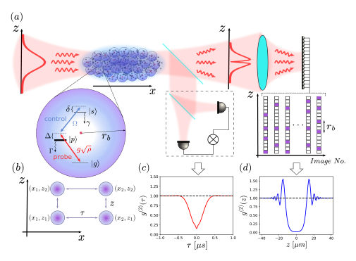
<figcaption class="paper-figure-caption"><b>Fig 1.</b> FIG. 1. (a) An ultracold large atomic ensemble is excited via two-photon transition to a Rydberg state (the control beam is not shown). We consider a ladder scheme with ground state |g⟩, intermediate state |p⟩(decay rate Γ, one-photon detuning ∆), and Rydberg state |s⟩(decoherence rate γ, two- photon detuning δ); the probe couples |g⟩↔|p⟩with col- lective strength g√ρ, and the control field couples |p⟩↔|s⟩ with Rabi frequency Ω. The probing beam waist w0 is cho- sen such that the blockade radius rb is smaller than the beam waist w0/rb &gt; 1. This condition breaks a typical 1D approximation. We investigate both the temporal cor- relations (c), which can be measured by a HBT setup, as well as...</figcaption>
</figure>
<figure class="paper-figure-card">
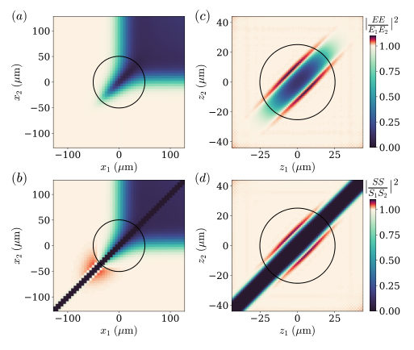
<figcaption class="paper-figure-caption"><b>Fig 2.</b> FIG. 3. Numerically calculated normalized stationary two- photon wavefunction ψ(x1, z1, x2, z2) for a 2D Gaussian atomic cloud ρ(x, z), indicated by the black circle, showing the Rydberg blockade in both the longitudinal and transverse planes. Each panel shows the two-particle amplitude normal- ized to the product i1j2 of the corresponding single-photon amplitudes, defined in Sec. III. (a) Two-photon amplitude EE E1E2</figcaption>
</figure>
<figure class="paper-figure-card">
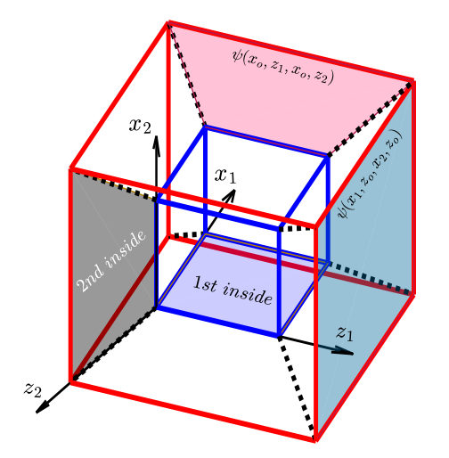
<figcaption class="paper-figure-caption"><b>Fig 3.</b> FIG. 2. Schematic visualization of the four-dimensional configuration space of the two-photon wavefunction ψ(x1, z1, x2, z2), represented as a tesseract by two nested cubes (inner blue and outer red). The coordinate pairs (x1, z1) and (x2, z2) specify the positions of photons 1 and 2, respectively. The coordinates x1, x2, and z1 form the three orthogonal axes of each cube, while the fourth coordinate, z2, is represented by the connections between the cubes. The gray- and blue-shaded ‘input’ planes correspond to initially uncorrelated photons: on the blue (gray) plane, photon 1 (2) enters the medium while photon 2 (1) has not yet entered. Propagating through the atomic cloud generates...</figcaption>
</figure>
<figure class="paper-figure-card">
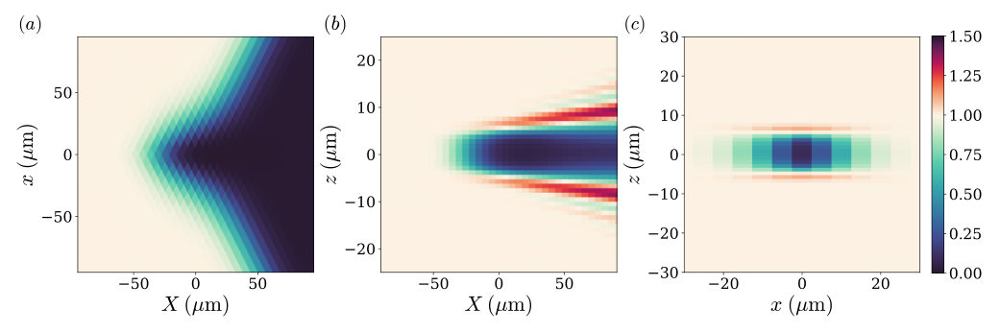
<figcaption class="paper-figure-caption"><b>Fig 4.</b> FIG. 4. Normalized two-photon wavefunction amplitude |EE|2 plotted in center-of-mass (X) and relative coordinates (x, z).</figcaption>
</figure>
<figure class="paper-figure-card">
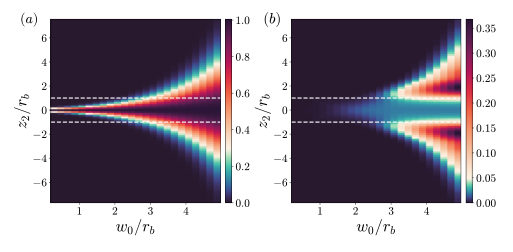
<figcaption class="paper-figure-caption"><b>Fig 5.</b> FIG. 5. Numerically calculated transverse profile of the two- photon amplitude |EE(xo, 0, x2, z2)|2, with one photon de- tected at the exit of the medium (x1 = xo), as a function of normalized transverse position z2 and beam waist w0, at (a) the entrance (x2 = −xo) and (b) the exit (x2 = xo) of the atomic medium. Comparing the two reveals the effect of the Rydberg blockade on the transmitted beam. For w0 ≫rb, the blockade imprints a central depletion hole of width 2rb on the output profile, confirming that the suppression is blockade- induced. For w0 ≤rb, the blockade weakens and the output profile is instead broadened by paraxial diffraction, with no clear central hole. The crossover near...</figcaption>
</figure>
</div>

<p><strong>Summary.</strong> This paper theoretically investigates how two photons interact via transverse Rydberg blockade in an EIT medium. It finds that the transverse correlation length is set by the blockade radius, while the longitudinal correlation is limited by bandwidth, demonstrating distinct physical mechanisms in each direction. The results provide a novel, measurable diagnostic tool for characterizing Rydberg interactions using spatial photon statistics.</p>
<p><strong>Why it may be interesting.</strong> This work provides a detailed theoretical framework for using spatial photon correlations to probe fundamental atomic interactions (Rydberg blockade) in a highly controllable quantum optical setting, bridging quantum optics and atomic physics.</p>
<details>
<summary>Detailed structure</summary>
<p><strong>Main problem.</strong> The paper develops a theory for the transverse spatial dynamics of two interacting photons propagating in a Rydberg nonlinear medium, extending beyond the standard one-dimensional analysis.</p>
<p><strong>Main result.</strong> It establishes that transverse Rydberg blockade creates a distinct, measurable correlation mechanism whose length scale is determined by the blockade radius, independent of the EIT bandwidth.</p>
<p><strong>Method.</strong> The authors derive an effective two-photon Schrödinger-like equation and analyze its transport equation by separating the interaction potential into dissipative and dispersive parts.</p>
<p><strong>Model / system.</strong> The system involves two photons propagating through a medium containing atoms excited to Rydberg states under Electromagnetically Induced Transparency (EIT) conditions, modeled by a two-polariton Hamiltonian.</p>
<p><strong>Key observables.</strong> Two-photon wavefunction, two-photon correlation functions, transverse and longitudinal correlation lengths, and the blockade width.</p>
<p><strong>Important parameters / regimes.</strong> Blockade radius ($r_b$), EIT bandwidth, input beam waist ($w_0$), and optical depth (OD).</p>
<p><strong>Assumptions / limitations.</strong> The analysis relies on approximations such as the undepleted tail ($I \simeq 1$) and the separation of the interaction potential into dissipative and dispersive components.</p>
<p><strong>Figures summary.</strong> Figures illustrate the setup, the 4D configuration space, the stationary two-photon wavefunction showing blockade, and the final results comparing transverse (diffractive) and longitudinal (diffusive) correlation scaling.</p>
<p><strong>Paper structure.</strong> The paper progresses from setting up the full two-polariton Hamiltonian to deriving an effective 2D Schrödinger equation. It then analyzes the anisotropy by treating the transverse and longitudinal kinetic terms separately, leading to distinct scaling laws for the correlation lengths.</p>
</details>
<details>
<summary>Abstract</summary>
<p>We develop a theory of the transverse spatial dynamics of two interacting photons in a Rydberg nonlinear medium. Extending the well-studied one-dimensional case, we explore both longitudinal and transverse correlations of photons propagating as Rydberg polaritons. We identify distinct behaviors and scaling laws for these correlations, arising from fundamentally different mechanisms in the two directions: diffraction for transverse correlations and diffusion for longitudinal correlations. We develop a model incorporating a Gaussian optical beam and an inhomogeneous atomic density distribution, from which we derive quantitative predictions for correlation functions in both directions. We further show that the propagation equations can be reduced to a single Schrödinger-like equation, allowing approximate solutions that are supported by full numerical results. Our findings indicate that the transverse correlation length is determined primarily by the blockade radius, whereas the longitudinal correlation length is limited by bandwidth. These results establish transverse Rydberg blockade as a distinct and measurable correlation mechanism and show that spatial photon correlations provide a direct means of measuring the blockade radius.</p>
</details>
<p><sub><a href="#top">↑ back to top</a></sub></p>

<p><a id="paper-2609.00928"></a></p>
<h3 id="thermal-screening-and-critical-scaling-of-quantum-energy-teleportation-in-a-harmonic-chain"><a href="http://arxiv.org/abs/2609.00928v1">Thermal screening and critical scaling of quantum energy teleportation in a harmonic chain</a></h3>
<p><strong>Authors:</strong> Taisanul Haque<br>
<strong>Type:</strong> theory · <strong>Category:</strong> statistical mechanics · <strong>PDF:</strong> <a href="https://arxiv.org/pdf/2609.00928v1">https://arxiv.org/pdf/2609.00928v1</a><br>
<strong>Analysis basis:</strong> full PDF text, analyzed in chunks
<strong>Topic relevance:</strong> <code>non-equilibrium universality</code> <strong>3/5</strong> · <code>quantum measurements</code> <strong>3/5</strong> · <code>Keldysh / 2PI / non-Gaussian methods</code> <strong>2/5</strong> · <code>analog quantum simulation</code> <strong>2/5</strong> · <code>Frenkel-Kontorova</code> <strong>1/5</strong> · <code>driven-dissipative phase transition</code> <strong>1/5</strong> · <code>methods for driven-dissipative</code> <strong>1/5</strong></p>
<div class="figure-strip-hint">↔ Scroll figures horizontally</div>
<div class="paper-figures-scroll">
<figure class="paper-figure-card">
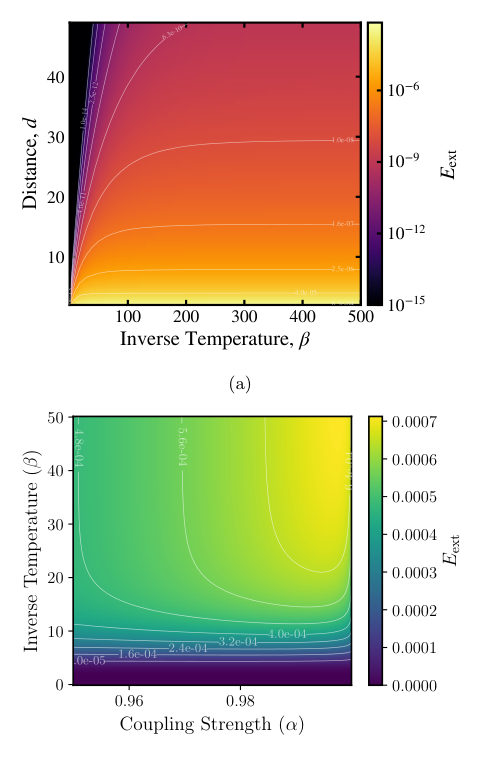
<figcaption class="paper-figure-caption"><b>Fig 1.</b> FIG. 1: Density plots of the optimized extracted energy Eext in Eq. (21) as a function of the indicated control parameters. Panel (a): dependence on inverse temperature β and Alice–Bob separation d, evaluated at N = 300, α = 0.9999, and Ω= 1. Panel (b): dependence on coupling strength α and inverse temperature β at fixed separation d = 2, evaluated at N = 300 and Ω= 1.</figcaption>
</figure>
<figure class="paper-figure-card">
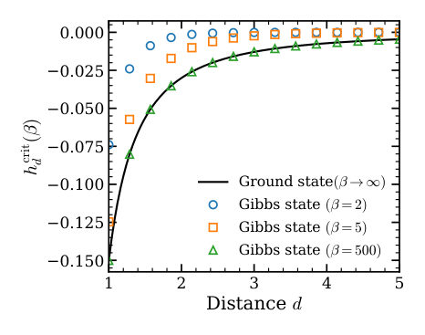
<figcaption class="paper-figure-caption"><b>Fig 2.</b> FIG. 2: Critical thermal coupling hcrit d (β) in the thermodynamic limit. Symbols: finite-temperature results from Eq. (31) at selected values of β. Solid line: exact zero-temperature result from Eq. (36). At finite β, thermal screening suppresses the coupling at large distance; as β →∞the curves converge to the ground-state profile.</figcaption>
</figure>
<figure class="paper-figure-card">
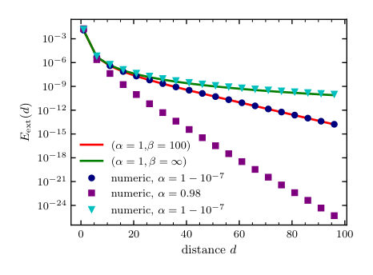
<figcaption class="paper-figure-caption"><b>Fig 3.</b> FIG. 3: Extracted energy Eext(d) in the thermodynamic regime. Solid curves: analytical critical results (α = 1) for the Gibbs state at finite temperature and for the ground state. Symbols: numerical data for N = 215 in the near-critical regime (α = 1 −10−7, circles) and in the gapped phase (α = 0.98, squares). The near-critical data are nearly indistinguishable from the α = 1 curves at this scale, whereas the gapped data exhibit a substantially faster decay.</figcaption>
</figure>
<figure class="paper-figure-card">
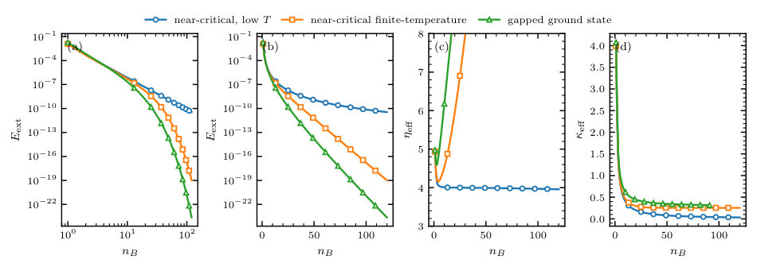
<figcaption class="paper-figure-caption"><b>Fig 4.</b> FIG. 4: Distance-scaling diagnostics for the extracted energy Eext(nB). The three curves correspond to: near-critical low temperature (blue), (N, α, β, Ω) = (2000, 1 −10−9, 105, 1); near-critical finite temperature (orange), (N, α, β, Ω) = (2000, 1 −10−9, 70, 1); and the gapped ground-state regime (green), (N, α, β, Ω) = (2000, 0.99, 105, 1). Panel (a) shows the data on logarithmic axes, testing algebraic decay, while panel (b) shows the same data on semilogarithmic axes, testing exponential decay. Panel (c) shows the effective logarithmic exponent ηeff(nB) = −d log Eext/d log nB, and panel (d) shows the local attenuation rate κeff(nB) = −d log Eext/dnB.</figcaption>
</figure>
<figure class="paper-figure-card">
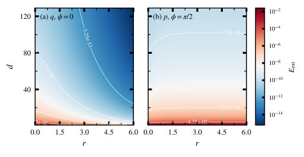
<figcaption class="paper-figure-caption"><b>Fig 5.</b> FIG. 5: Density plots of the extracted energy Eext versus squeezing parameter r and separation d for Nsys = 500, β = 105, Ω= 1.0, and α = 1 −10−13. Panel (a) corre- sponds to the q-squeezed measurement, and panel (b) to the p-squeezed measurement. The white lines indicate contours of constant extracted energy.</figcaption>
</figure>
</div>

<p><strong>Summary.</strong> This work analyzes quantum energy teleportation in a 1D harmonic chain, treating the system at finite temperatures. The authors derive that the extracted energy is exponentially screened at finite temperatures but reveals an exact $d^{-4}$ decay law in the zero-temperature critical limit. This connects quantum information protocols to fundamental concepts in critical statistical mechanics.</p>
<p><strong>Why it may be interesting.</strong> It provides rigorous analytical results for energy transport in quantum many-body systems near criticality, connecting concepts from quantum information (teleportation) with critical phenomena and thermal correlation lengths.</p>
<details>
<summary>Detailed structure</summary>
<p><strong>Main problem.</strong> The paper investigates the behavior of quantum energy teleportation (QET) in a harmonic chain at finite temperatures, focusing on how the extracted energy scales with distance and temperature.</p>
<p><strong>Main result.</strong> The extracted energy exhibits exponential screening at finite temperatures but follows an exact asymptotic law of $E_{	ext{ext}} \sim d^{-4}$ in the zero-temperature critical limit.</p>
<p><strong>Method.</strong> The analysis uses a Gaussian-state formulation for the Gibbs state and derives the extracted energy by optimizing a measurement-feedback protocol, reducing the problem to thermal two-point correlation functions.</p>
<p><strong>Model / system.</strong> The system is a one-dimensional harmonic chain, modeled by a quadratic Hamiltonian $H = rac{1}{2} \sum_j (p_j^2 + q_j^2 - \alpha q_j q_{j-1})$. The initial state is a Gibbs state $
ho_eta = e^{-eta H} /     ext{Tr}(e^{-eta H})$.</p>
<p><strong>Key observables.</strong> Extracted Energy ($E_{	ext{ext}}$), which is the primary diagnostic observable.</p>
<p><strong>Important parameters / regimes.</strong> Temperature ($eta$), separation distance ($d$), coupling strength ($\alpha$), and squeezing parameters ($p, q$).</p>
<p><strong>Assumptions / limitations.</strong> The system is assumed to be in a Gibbs state, and the analysis often specializes to the single-site protocol.</p>
<p><strong>Figures summary.</strong> Figures illustrate the dependence of $E_{	ext{ext}}$ on temperature/distance and coupling strength, comparing analytical results for critical ($\alpha=1$) and gapped regimes.</p>
<p><strong>Paper structure.</strong> The paper develops the QET protocol for Gaussian states, derives the single-site protocol result, and then analyzes the asymptotic limits: finite temperature (exponential decay) and zero temperature critical limit ($d^{-4}$ decay).</p>
</details>
<details>
<summary>Abstract</summary>
<p>We develop a finite-temperature Gaussian-state formulation of quantum energy teleportation in the one-dimensional harmonic chain. For Gibbs states, the optimized measurement-feedback protocol reduces to thermal two-point functions. In the single-site protocol, the extracted energy is governed by a single correlator, which makes the thermodynamic and near-critical limits analytically tractable. At fixed finite temperature, the extracted energy is exponentially screened with distance and is controlled by a thermal correlation length for both critical and non-critical $α$. In the zero-temperature critical limit taken after the thermodynamic limit, we derive the exact asymptotic law $E_{\mathrm{ext}}\sim d^{-4}$. Numerical results confirm both regimes and resolve the crossover responsible for the apparent drift of the effective decay exponent at intermediate distances. We also analyze squeezed Gaussian measurements and show that they modify the extraction prefactor: $p-$squeezing enhances the extracted energy, whereas $q-$squeezing suppresses it, without changing the large-distance scaling.</p>
</details>
<p><sub><a href="#top">↑ back to top</a></sub></p>

<p><a id="paper-2609.01547"></a></p>
<h3 id="irreducibility-and-regularisation-properties-of-gaussian-quantum-markov-semigroups"><a href="http://arxiv.org/abs/2609.01547v1">Irreducibility and regularisation properties of Gaussian quantum Markov semigroups</a></h3>
<p><strong>Authors:</strong> Franco Fagnola, Federico Girotti<br>
<strong>Type:</strong> theory · <strong>Category:</strong> other · <strong>PDF:</strong> <a href="https://arxiv.org/pdf/2609.01547v1">https://arxiv.org/pdf/2609.01547v1</a><br>
<strong>Analysis basis:</strong> full PDF text, analyzed in chunks
<strong>Topic relevance:</strong> <code>correlated / nonlocal dissipation</code> <strong>3/5</strong> · <code>methods for driven-dissipative</code> <strong>3/5</strong> · <code>Keldysh / 2PI / non-Gaussian methods</code> <strong>2/5</strong> · <code>driven-dissipative phase transition</code> <strong>2/5</strong> · <code>non-equilibrium universality</code> <strong>1/5</strong> · <code>quantum measurements</code> <strong>1/5</strong></p>
<div class="figure-strip-hint">↔ Scroll figures horizontally</div>
<div class="paper-figures-scroll">
<figure class="paper-figure-card">
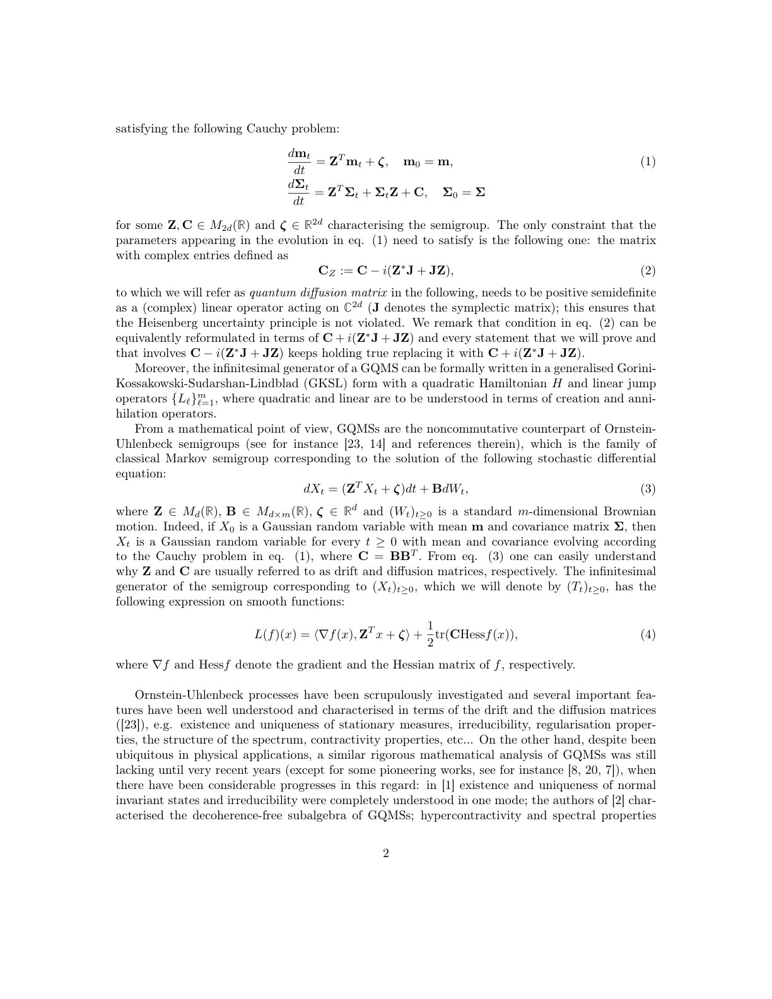
<figcaption class="paper-figure-caption"><b>Fig 1.</b> Low-resolution page preview, page 2</figcaption>
</figure>
<figure class="paper-figure-card">
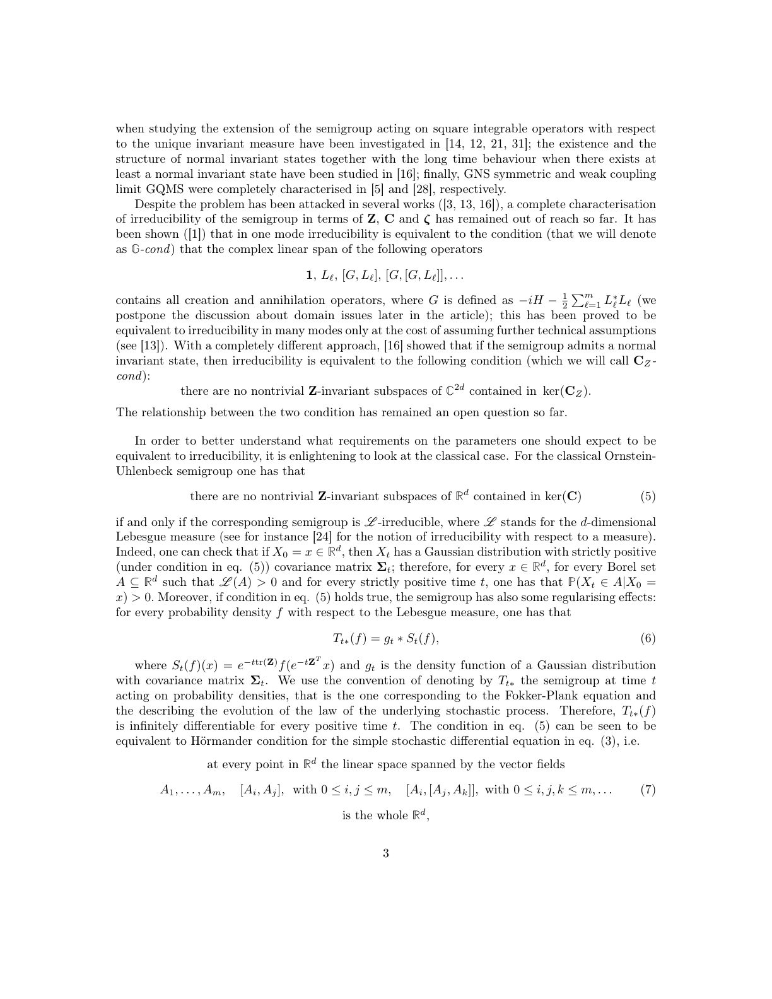
<figcaption class="paper-figure-caption"><b>Fig 2.</b> Low-resolution page preview, page 3</figcaption>
</figure>
<figure class="paper-figure-card">
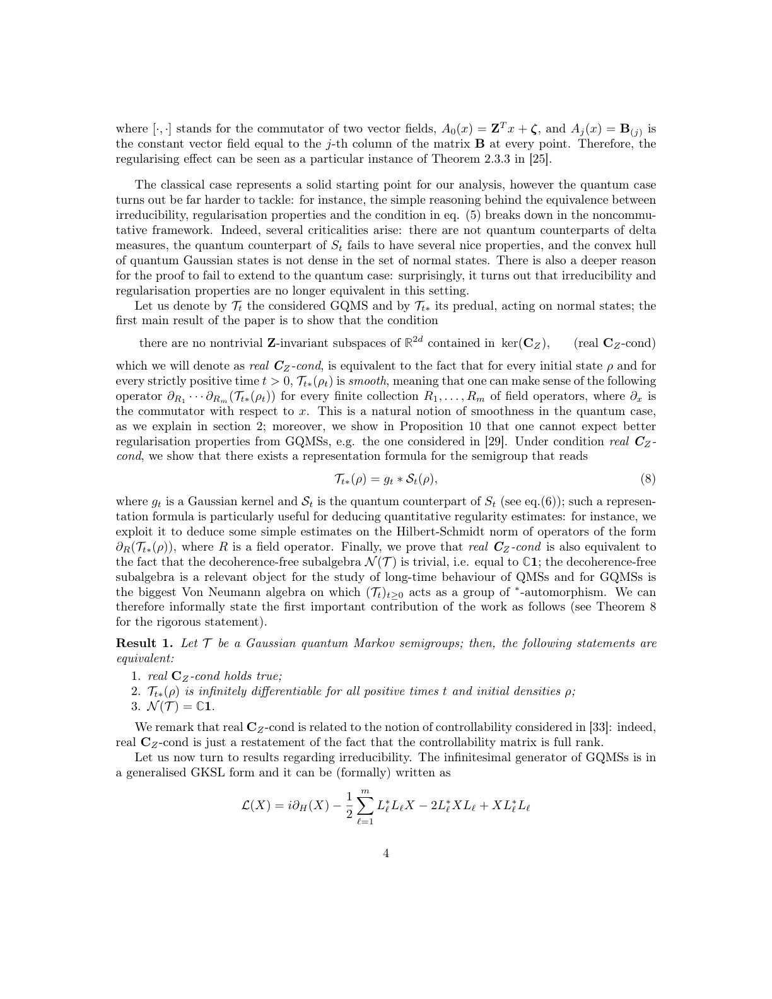
<figcaption class="paper-figure-caption"><b>Fig 3.</b> Low-resolution page preview, page 4</figcaption>
</figure>
<figure class="paper-figure-card">
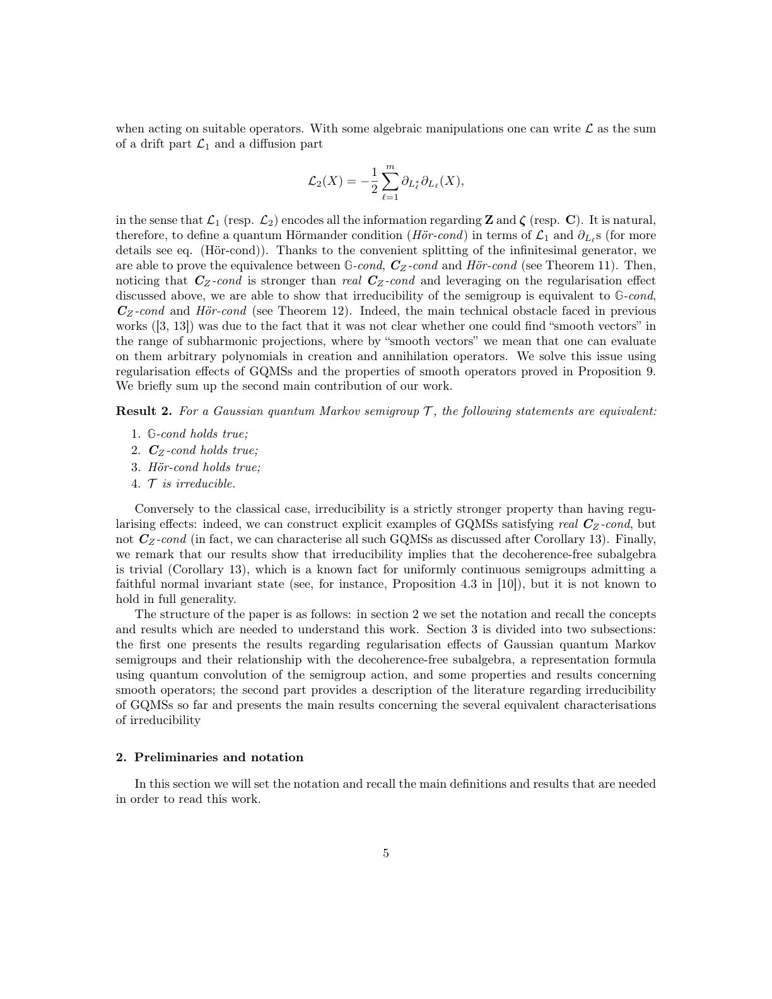
<figcaption class="paper-figure-caption"><b>Fig 4.</b> Low-resolution page preview, page 5</figcaption>
</figure>
<figure class="paper-figure-card">
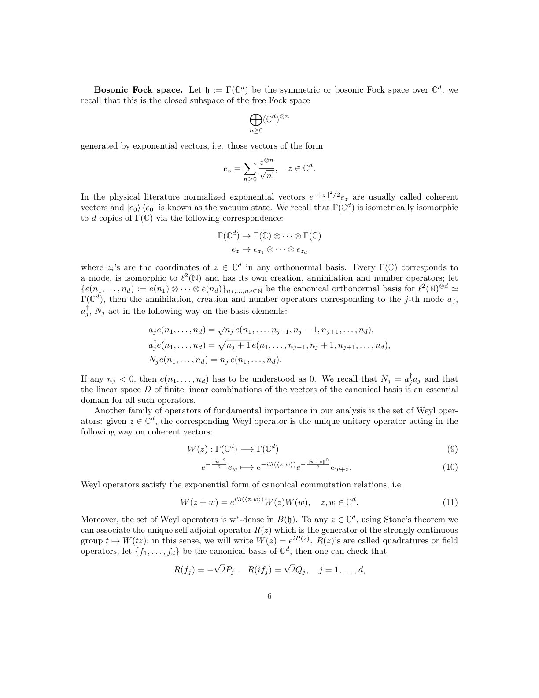
<figcaption class="paper-figure-caption"><b>Fig 5.</b> Low-resolution page preview, page 6</figcaption>
</figure>
</div>

<p><strong>Summary.</strong> This paper develops a deep mathematical theory characterizing the regularisation and irreducibility of Gaussian quantum Markov semigroups. It establishes that these two properties are distinct, providing several equivalent algebraic criteria for each. The results offer a powerful tool for analyzing open quantum systems in continuous variable settings, particularly relevant for quantum optics.</p>
<p><strong>Why it may be interesting.</strong> This work provides a rigorous algebraic framework for analyzing open quantum dynamics in continuous variables, which is crucial for understanding decoherence and system controllability in quantum optics and quantum information processing.</p>
<details>
<summary>Detailed structure</summary>
<p><strong>Main problem.</strong> The paper investigates the mathematical properties, specifically regularisation and irreducibility, of Gaussian quantum Markov semigroups (GQMSs). It aims to establish algebraic criteria that characterize these behaviors in continuous-variable quantum systems.</p>
<p><strong>Main result.</strong> The authors establish that, for GQMSs, irreducibility is a strictly stronger condition than those ensuring regularisation, leading to equivalent algebraic criteria involving the drift and quantum diffusion matrices.</p>
<p><strong>Method.</strong> The analysis employs advanced mathematical tools from functional analysis and quantum dynamics, comparing the quantum evolution to classical Ornstein-Uhlenbeck processes and utilizing superoperator formalism.</p>
<p><strong>Model / system.</strong> The system is an open quantum system modeled by GQMSs acting on the bosonic Fock space, relevant for quantum optics and quantum memories. The dynamics are governed by equations for the mean and covariance matrices.</p>
<p><strong>Key observables.</strong> Regularisation properties, irreducibility, the decoherence-free subalgebra N(T), and the associated algebraic conditions (real CZ-cond, G-cond, Hör-cond).</p>
<p><strong>Important parameters / regimes.</strong> The drift matrix (Z) and the quantum diffusion matrix (C) are central parameters determining the semigroup's evolution.</p>
<p><strong>Assumptions / limitations.</strong> The analysis relies on the structure of Gaussian states and the ability to translate complex quantum dynamics into equivalent linear algebraic conditions.</p>
<p><strong>Figures summary.</strong> Not specified.</p>
<p><strong>Paper structure.</strong> The paper develops the theory by first analyzing the classical analogy, then characterizing regularisation via the triviality of the decoherence-free subalgebra, and finally establishing the equivalence of multiple algebraic conditions (G-cond $\Leftrightarrow$ CZ-cond $\Leftrightarrow$ Hör-cond) to prove irreducibility.</p>
</details>
<details>
<summary>Abstract</summary>
<p>We study regularisation and irreducibility properties of Gaussian quantum Markov semigroups (GQMSs) acting on continuous-variable quantum systems. We first identify a natural notion of regularity for operators in this setting, which allows us to formulate and characterise the smoothing effects of GQMSs in terms of algebraic conditions involving the drift and quantum diffusion matrices. These conditions establish a connection with the controllability theory of quantum linear systems and with the structure of decoherence-free subsystems.   We then characterise irreducibility through several equivalent algebraic criteria: one formulated in terms of the drift and quantum diffusion matrices, one in terms of the operators appearing in the generalised GKLS representation of the generator, and a third given by a quantum analogue of Hörmander's condition. A central and somewhat surprising consequence is that, in contrast with the classical case, irreducibility is strictly stronger than conditions ensuring regularisation. Our results provide an algebraic framework for analysing these properties and lay the groundwork for a broader study of reducible Gaussian quantum Markov semigroups and, more generally, more general relevant quantum Markov semigroups on continuous-variable systems.</p>
</details>
<p><sub><a href="#top">↑ back to top</a></sub></p>

<p><a id="paper-2609.01157"></a></p>
<h3 id="a-continuous-mode-quantum-optical-representation-of-finite-strong-field-laser-pulses-in-free-space"><a href="http://arxiv.org/abs/2609.01157v1">A continuous-mode quantum-optical representation of finite strong-field laser pulses in free space</a></h3>
<p><strong>Authors:</strong> Szabolcs Hack, Attila Czirják, Péter Földi<br>
<strong>Type:</strong> theory · <strong>Category:</strong> other · <strong>PDF:</strong> <a href="https://arxiv.org/pdf/2609.01157v1">https://arxiv.org/pdf/2609.01157v1</a><br>
<strong>Analysis basis:</strong> full PDF text, analyzed in chunks
<strong>Topic relevance:</strong> <code>Keldysh / 2PI / non-Gaussian methods</code> <strong>3/5</strong> · <code>methods for driven-dissipative</code> <strong>3/5</strong> · <code>quantum measurements</code> <strong>3/5</strong> · <code>interference shaping light</code> <strong>2/5</strong></p>
<div class="figure-strip-hint">↔ Scroll figures horizontally</div>
<div class="paper-figures-scroll">
<figure class="paper-figure-card">
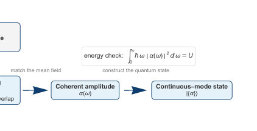
<figcaption class="paper-figure-caption"><b>Fig 1.</b> Figure 1. Workflow for constructing a continuous-mode coherent state from laboratory pulse data. The measured pulse determines the analytic signal and its spectrum, while the chosen transverse mode family defines the spatial-polarization degree of freedom. Mode matching (or projection onto the selected mode family) yields the coherent amplitude α(ω), whose normalization is verified by reproducing the measured pulse energy before constructing the coherent state |{α}⟩.</figcaption>
</figure>
<figure class="paper-figure-card">
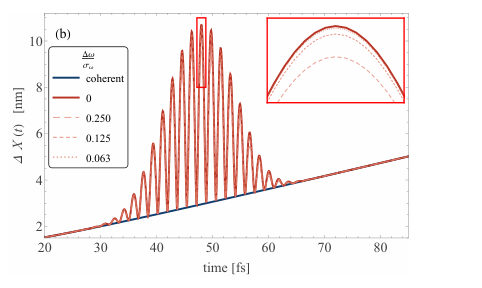
<figcaption class="paper-figure-caption"><b>Fig 2.</b> Figure 2. (a) Mean electron position for the coherent Gaussian pulse specified in the text. The solid curve is the continuum result, while the dashed and dotted curves are obtained from normalized top-hat frequency-bin projections. (b) Position uncertainty for the coherent pulse (blue) and the equal-energy single-wave packet squeezed-vacuum pulse (red). The insets enlarge the marked regions.</figcaption>
</figure>
</div>

<p><strong>Summary.</strong> This paper establishes a continuous-mode quantum-optical representation for analyzing strong-field laser pulses in free space. It details how measured pulse characteristics determine the quantum state, distinguishing between fully determined coherent states and more complex nonclassical states requiring higher-order correlation information. The framework offers a consistent bridge between experimental measurements and advanced quantum field theory calculations.</p>
<p><strong>Why it may be interesting.</strong> This work provides a powerful, systematic tool for connecting time-domain measurements of intense laser fields to the underlying quantum state description, which is crucial for understanding non-linear quantum optics phenomena.</p>
<details>
<summary>Detailed structure</summary>
<p><strong>Main problem.</strong> The paper develops an energy-consistent quantum-optical framework to describe finite strong-field laser pulses in free space, aiming to unify the treatment of both coherent and nonclassical driving fields.</p>
<p><strong>Main result.</strong> The framework successfully maps measured free-space pulse characteristics onto a continuous-mode quantum state $|\{\alpha\}
angle$, providing a rigorous interface for quantum-optical calculations.</p>
<p><strong>Method.</strong> It employs a continuous-mode description starting from plane-wave quantization, utilizing a transverse vector-mode reduction and spectral decomposition ($\alpha(\omega)$).</p>
<p><strong>Model / system.</strong> The system is a free-electron model driven by intense, finite-duration laser pulses in vacuum. The quantum state is represented in the continuous-mode coherent state basis.</p>
<p><strong>Key observables.</strong> Spectral amplitude $\alpha(\omega)$, total pulse energy ($U$), mean photon number ($ar{N}$), and field variances ($\Delta X^2$).</p>
<p><strong>Important parameters / regimes.</strong> Pulse duration, spectral bandwidth ($\Delta\omega$), and the degree of nonclassicality (requiring covariance kernels).</p>
<p><strong>Assumptions / limitations.</strong> The analysis relies on the paraxial approximation and, for numerical work, involves projecting the continuous spectrum onto discrete frequency bins.</p>
<p><strong>Figures summary.</strong> The notes describe a workflow diagram illustrating the mapping from measured pulse $
ightarrow$ analytic signal $
ightarrow$ spectrum $
ightarrow$ coherent amplitude $\alpha(\omega) 
ightarrow$ quantum state.</p>
<p><strong>Paper structure.</strong> The paper builds the framework by first defining the continuous-mode representation for coherent states, then extending it to nonclassical states using covariance kernels, and finally addressing the practical numerical challenges of spectral discretization and convergence.</p>
</details>
<details>
<summary>Abstract</summary>
<p>We formulate an energy-consistent quantum-optical representation of finite paraxial laser pulses in free space. The formulation is based on a continuous-mode description and provides a step toward a unified treatment of coherent and nonclassical strong-field drivers. Starting from plane-wave quantization, we construct a transverse vector-mode reduction in which the selected mode can reproduce an arbitrary normalized spatial--polarization profile. For a coherent pulse, the measured pulse energy and full laboratory analytic signal determine the frequency-dependent coherent-state displacement $(α(ω))$, without introducing a physical quantization volume. For nonclassical pulses, the same first-order field data and total energy do not uniquely specify the quantum state. Additional correlation information or model assumptions are required. We incorporate this information through normal and anomalous covariance kernels and discuss $g^{(2)}$-based diagnostics of squeezed pulses. We also derive a phase-sensitive convergence criterion for numerical frequency-bin discretizations. An exactly solvable continuum-mode free-electron application shows that the coherent displacement reproduces the semiclassical mean trajectory, whereas the field covariances determine the electron wave packet width. The framework offers a convenient, energy-consistent interface between measured free-space pulses and quantum-optical calculations.</p>
</details>
<p><sub><a href="#top">↑ back to top</a></sub></p>

<p><a id="paper-2609.01078"></a></p>
<h3 id="statistical-language-competition-model-with-dynamic-edge-weighting-on-a-random-network"><a href="http://arxiv.org/abs/2609.01078v1">Statistical Language Competition Model with Dynamic Edge Weighting on a Random Network</a></h3>
<p><strong>Authors:</strong> Somyaranjan Chakra, Mohit Anand Madhesia, Shradha Mishra<br>
<strong>Type:</strong> theory · <strong>Category:</strong> statistical mechanics · <strong>PDF:</strong> <a href="https://arxiv.org/pdf/2609.01078v1">https://arxiv.org/pdf/2609.01078v1</a><br>
<strong>Analysis basis:</strong> full PDF text, analyzed in chunks
<strong>Topic relevance:</strong> <code>driven-dissipative phase transition</code> <strong>3/5</strong> · <code>non-equilibrium universality</code> <strong>3/5</strong> · <code>analog quantum simulation</code> <strong>2/5</strong> · <code>methods for driven-dissipative</code> <strong>2/5</strong> · <code>Frenkel-Kontorova</code> <strong>1/5</strong></p>
<div class="figure-strip-hint">↔ Scroll figures horizontally</div>
<div class="paper-figures-scroll">
<figure class="paper-figure-card">
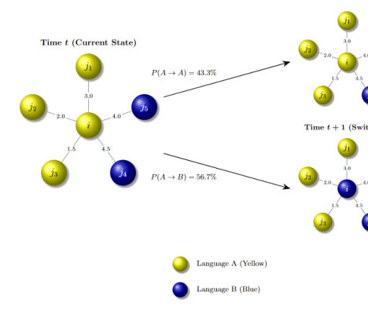
<figcaption class="paper-figure-caption"><b>Fig 1.</b> FIG. 1. Probabilistic Model: Schematic illustration of the probabilistic agent-based language competition model with dynamic edge weighting. Yellow nodes represent agents speaking Language A, while blue nodes represent agents speaking Language B. The central node updates its language state according to the weighted influence of its neighbour- ing agents, where the edge weights wij denote the strength of social interactions. The language-switching probability is computed from the weighted local language densities using Eq. 4. During the evolution, edges connecting neighbour- ing minority-language speakers are reinforced according to Eq. 6, establishing a feedback between network topology and...</figcaption>
</figure>
<figure class="paper-figure-card">

<figcaption class="paper-figure-caption"><b>Fig 2.</b> Fig.1 provides a schematic illustration of the probabilis- tic agent-based framework employed in this study. The central node i interacts with its neighbouring agents through weighted edges, where each edge weight rep- resents the strength of social interaction between two connected individuals. The neighbouring nodes belong to either Language A or Language B, and the weighted contributions from each language are accumulated sepa- rately to determine the local linguistic influence on the central node [8].</figcaption>
</figure>
<figure class="paper-figure-card">
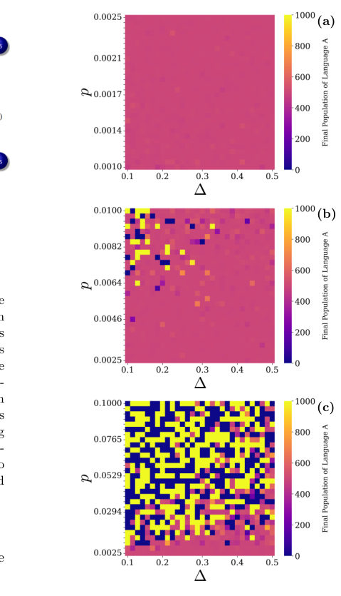
<figcaption class="paper-figure-caption"><b>Fig 3.</b> FIG. 2. Comparative phase-space diagrams for three connec- tivity regimes. Colour encodes the A-language population at T = 250. (a) Sparse (p low); (b) Transition (percolation threshold); (c) Dense (p high).</figcaption>
</figure>
<figure class="paper-figure-card">
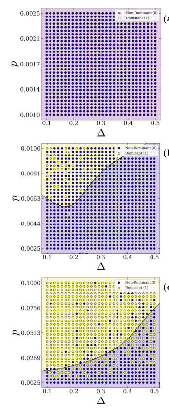
<figcaption class="paper-figure-caption"><b>Fig 4.</b> FIG. 3. SVM decision boundaries (solid curves) separating dominance from coexistence regimes across three connectiv- ity ranges. (a) Regime 1: p ∈[0.001, 0.0025]; (b) Regime 2: p ∈[0.0025, 0.01]; (c) Regime 3: p ∈[0.0025, 0.1]. The upward shift of the boundary with increasing p shows that denser networks demand higher reinforcement ∆to maintain linguistic diversity.</figcaption>
</figure>
<figure class="paper-figure-card">
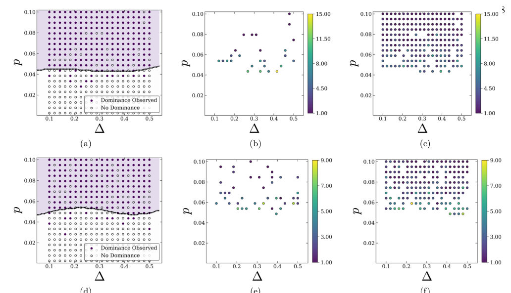
<figcaption class="paper-figure-caption"><b>Fig 5.</b> FIG. 4. Phase boundary and anomalous cluster visualisation for a network of N = 50 at T = 250. The top row (a-c) corresponds to s = 1.0, while the bottom row (d-f) corresponds to s = 0.5. Panels (a,d) show the SVM phase boundary, where open white circles denote non-binary dominant (anomalous) points within the predicted dominance region. Panels (b,e) show the cluster formation in anomalous points, and panels (c,f) show the cluster formation in non-anomalous points. Colors show the size of the clusters.</figcaption>
</figure>
</div>

<p><strong>Summary.</strong> This paper models language competition on random networks, extending classical models by incorporating dynamic social reinforcement between minority speakers. It maps out the parameter space where minority languages can persist against majority pressure, showing that network structure and local reinforcement are key competing factors. The work also extends the model to include bilingualism, demonstrating its role in stabilizing coexistence regimes.</p>
<p><strong>Why it may be interesting.</strong> While focused on sociolinguistics, the underlying mathematical framework—modeling phase transitions, critical points, and non-equilibrium dynamics on complex networks—is directly analogous to many physical systems studied in statistical mechanics, such as pattern formation or phase transitions in interacting particle systems.</p>
<details>
<summary>Detailed structure</summary>
<p><strong>Main problem.</strong> The paper investigates language competition dynamics, modeling how minority language speakers reinforce local social ties to resist assimilation pressure from a majority language.</p>
<p><strong>Main result.</strong> The interplay between network connectivity ($p$) and adaptive edge reinforcement ($\Delta$) determines the phase boundary between language dominance and coexistence regimes. Furthermore, the inclusion of bilingual speakers enriches dynamics by promoting coexistence.</p>
<p><strong>Method.</strong> The study uses agent-based simulations on Erdős–Rényi random networks, employing a weighted majority rule for language switching and Support Vector Machines (SVM) for formal phase boundary identification.</p>
<p><strong>Model / system.</strong> The system is a set of agents on a random network where language switching is governed by weighted local influence. The model extends the Abrams–Strogatz framework with a dynamic edge-weighting mechanism that reinforces ties between co-minority speakers.</p>
<p><strong>Key observables.</strong> Final majority-language density ($
ho$), average minority cluster size, phase boundary location in $(p, \Delta)$ space, and anomaly density.</p>
<p><strong>Important parameters / regimes.</strong> Network connectivity probability ($p$), reinforcement strength ($\Delta$), language prestige ($s$), and network size ($N$).</p>
<p><strong>Assumptions / limitations.</strong> The initial state assumes equal language densities ($
ho_A(0) = 
ho_B(0) = 0.5$), and the analysis notes limitations regarding fixed simulation time steps ($T$).</p>
<p><strong>Figures summary.</strong> Figures illustrate phase boundaries and anomalous cluster formations across varying network sizes ($N$) and simulation times ($T$), showing how these boundaries shift and sharpen with increased time.</p>
<p><strong>Paper structure.</strong> The paper builds from the foundational Abrams–Strogatz model by introducing dynamic edge weighting and a probabilistic agent-based framework. It analyzes phase boundaries in $(p, \Delta)$ space, characterizes anomalous persistence zones, and extends the model to include bilingual speakers in a tripartite state space.</p>
</details>
<details>
<summary>Abstract</summary>
<p>This paper presents a computational study of language competition dynamics on Erdős--Rényi random networks, extending the foundational Abrams--Strogatz model through two novel contributions: (i) a dynamic edge-weighting mechanism that reinforces social ties between co-minority speakers by an additive increment $Δ$, and (ii) a probabilistic agent-based framework governing language switching via a weighted majority rule. Phase boundaries separating the dominance and coexistence regimes are identified across a two-dimensional parameter space $(p, Δ)$, where $p$ denotes the network connectivity probability. We further characterise anomalous persistence zones within predicted dominance regions, attributing them to the formation of isolated minority speaker clusters. Scaling study across network sizes $N \in \{50, 100, 250, 500, 1000\}$ reveal that average cluster size decreases with $N$ and that phase boundaries diffuse with increasing stochastic noise. Finally, we discuss extensions to a tripartite bilingual model and heterogeneous prestige/volatility to more faithfully capture real sociolinguistic contact scenarios.</p>
</details>
<p><sub><a href="#top">↑ back to top</a></sub></p>

<p><a id="paper-2609.00432"></a></p>
<h3 id="strong-suppression-of-the-photonic-density-of-states-in-three-dimensional-disordered-silicon-networks"><a href="http://arxiv.org/abs/2609.00432v1">Strong suppression of the photonic density of states in three-dimensional disordered silicon networks</a></h3>
<p><strong>Authors:</strong> Abraham Aguilar Uribe, Francisco Hernández Alejandre, Mattis Reisner, Geoffroy Aubry, Luis S. Froufe-Pérez, Marian Florescu, Frank Scheffold<br>
<strong>Type:</strong> both · <strong>Category:</strong> disordered systems and neural networks · <strong>PDF:</strong> <a href="https://arxiv.org/pdf/2609.00432v1">https://arxiv.org/pdf/2609.00432v1</a><br>
<strong>Analysis basis:</strong> full PDF text, analyzed in chunks
<strong>Topic relevance:</strong> <code>interference shaping light</code> <strong>3/5</strong> · <code>analog quantum simulation</code> <strong>2/5</strong> · <code>driven-dissipative phase transition</code> <strong>2/5</strong> · <code>methods for driven-dissipative</code> <strong>2/5</strong> · <code>quantum optics experiment</code> <strong>2/5</strong></p>
<div class="figure-strip-hint">↔ Scroll figures horizontally</div>
<div class="paper-figures-scroll">
<figure class="paper-figure-card">
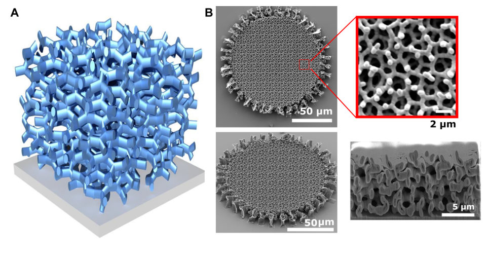
<figcaption class="paper-figure-caption"><b>Fig 1.</b> Figure 1: Fabrication of silicon amorphous gyroid networks. (A) Digital rendering of an amorphous gyroid network designed following the approach described in [16]. The average length of the rods connecting the nodes is ¯d0 = 0.8 µm. The rods are elliptical with an aspect ratio of 2.5 between the long and short axes. (B) SEM images of a structure with thickness L = 11.6µm after silicon infiltration and calcination: top view and inclined view. Enlarged view (scale bar: 2 µm). A focused ion beam cut of the sample reveals the sample interior (side view). Contrast was enhanced using CLAHE (clip limit = 2.0, tile grid size = 8 × 8) [59].</figcaption>
</figure>
<figure class="paper-figure-card">
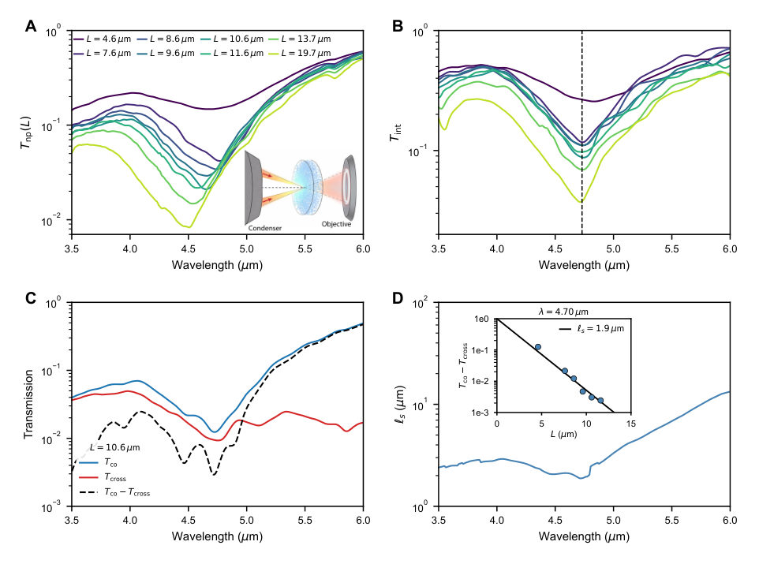
<figcaption class="paper-figure-caption"><b>Fig 2.</b> Figure 2: Transmission properties of amorphous gyroid networks (AGNs). (A) Unpolarized transmission spectra T(λ) for different sample thicknesses L (µm). Inset: mea- surement geometry — a 36X Cassegrain condenser with a numerical aperture NA = 0.52 [25] and a matched objective collecting light transmitted through the sample [22]. (B) Total in- tegrated transmission Tint(λ), reconstructed from the measured polarization components to account for the diffuse flux outside the objective cone. (C) Co- and cross-polarized trans- mission and their difference (the ballistic component Tco −Tcross) for a representative sample (L = 10.6 µm). (D) Ballistic scattering mean free path ℓs(λ) extracted...</figcaption>
</figure>
<figure class="paper-figure-card">
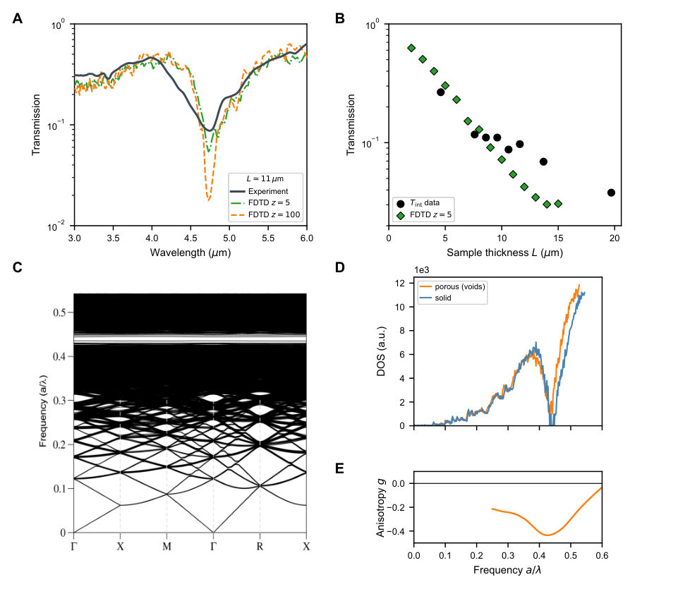
<figcaption class="paper-figure-caption"><b>Fig 3.</b> Figure 3: Experiment, FDTD, and band structure of the AGN photonic gap. (A) Integrated transmission spectra Tint(λ) from the experiment (L = 10.6 µm) and from FDTD simulations with 20% porosity averaged over five realizations, for L = 11.0 µm. Orange dashed line shows the results for monodisperse voids (z = 100) and the green dash-dotted line the results for polydisperse voids (z = 5). (B) Integrated transmission at λgap for dif- ferent sample thicknesses L. Black full circles show Tint reconstructed from the polarization- resolved transmission spectra and compared with the FDTD polydisperse simulations (green diamonds). (C) Band diagram for an AGN composed of solid rods with refractive...</figcaption>
</figure>
<figure class="paper-figure-card">
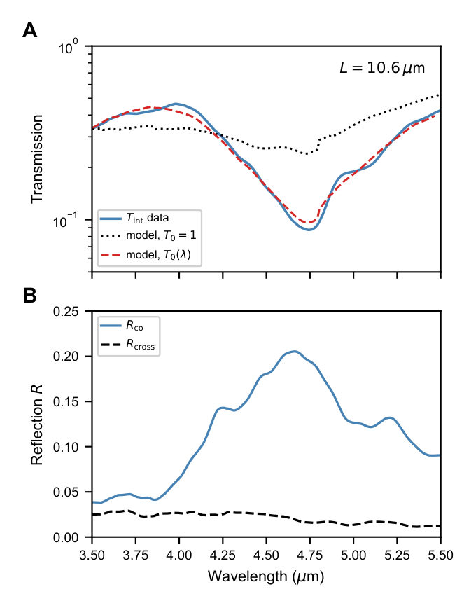
<figcaption class="paper-figure-caption"><b>Fig 4.</b> Figure 4: Transmission and polarized reflection for the L = 10.6 µm sample. (A) Integrated transmission Tint(λ) (solid line), compared with the diffuse-transport model Tint(λ) = e−L/ℓs + T0 b(L) evaluated with a fixed source amplitude T0 = 1 (dotted) and with the fitted, wavelength-dependent amplitude T0(λ) (dashed). (B) Co- (Rco) and cross- polarized (Rcross) reflection of the same sample as measured.</figcaption>
</figure>
<figure class="paper-figure-card">
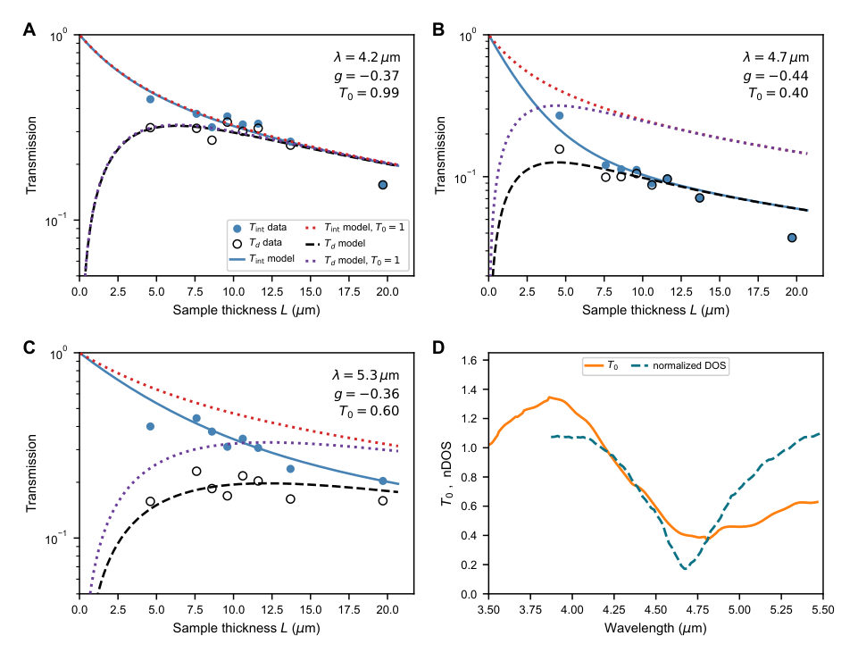
<figcaption class="paper-figure-caption"><b>Fig 5.</b> Figure 5: Integrated and diffuse transmission across the gap. Total integrated trans- mission Tint(L) (filled symbols) and diffuse transmission Td(L) = 2 Tcross(L)/0.22 (open sym- bols) as a function of sample thickness L, at three wavelengths: (A) λ = 4.2 µm, (B) λ = 4.7 µm (band-gap centre), and (C) λ = 5.3 µm. Solid lines show the diffuse-transport model Tint(L) = e−L/ℓs + T0 b(L) and dashed lines the diffuse term alone Td(L) = T0 b(L), with the build-up factor b(L) =  (1 + z0)(1 −e−L/ℓs) −(1 −g) L</figcaption>
</figure>
</div>

<p><strong>Summary.</strong> This paper reports the experimental observation of a deep photonic pseudogap in amorphous, disordered silicon networks using advanced lithography and polarization-resolved spectroscopy. By separating ballistic and diffuse light components, the authors provide direct evidence for the breakdown of classical diffuse transport, confirming the existence of disorder-induced light localization.</p>
<p><strong>Why it may be interesting.</strong> The work provides a direct experimental realization and diagnostic method for observing light localization phenomena (analogous to Anderson localization) in disordered media, which is a key topic in condensed matter physics and quantum optics.</p>
<details>
<summary>Detailed structure</summary>
<p><strong>Main problem.</strong> The study investigates the formation and characterization of photonic band gaps (or pseudogaps) in amorphous, disordered dielectric structures, moving beyond the traditional reliance on long-range periodicity.</p>
<p><strong>Main result.</strong> The authors experimentally establish the presence of a deep photonic pseudogap in an amorphous 3D dielectric by observing a strong suppression of diffuse transmission, indicating a breakdown of conventional diffuse transport.</p>
<p><strong>Method.</strong> The research combines advanced fabrication (DLW lithography) with polarization-resolved transmission spectroscopy to separate ballistic and multiply scattered light contributions for diagnosis.</p>
<p><strong>Model / system.</strong> The physical system is a three-dimensional disordered silicon network, specifically amorphous gyroid networks, fabricated with a controlled volume filling fraction. The analysis compares experimental measurements with large-scale numerical simulations (FDTD) solving Maxwell's equations.</p>
<p><strong>Key observables.</strong> Transmission spectra ($T_{int}(L)$), diffuse transmission ($T_d(L)$), ballistic transmission ($T_b(L)$), and the scattering mean free path ($\ell_s(\lambda)$).</p>
<p><strong>Important parameters / regimes.</strong> Gap center wavelength ($\lambda_{	ext{gap}} \approx 4.7 \mu	ext{m}$), volume filling fraction ($\phi \approx 20-25\%$), and the Ioffe–Regel parameter.</p>
<p><strong>Assumptions / limitations.</strong> The analysis relies on separating ballistic and diffuse light contributions using polarization-resolved spectroscopy, and the simulation/analysis assumes the cross-polarized signal is negligible for estimating $T_b(L)$.</p>
<p><strong>Figures summary.</strong> Figures show the fabricated structure, optical characterization setups, and spectral plots demonstrating the transmission minimum (pseudogap) and the dependence of transmission components on sample thickness.</p>
<p><strong>Paper structure.</strong> The paper progresses from establishing the feasibility of photonic bandgaps in amorphous materials to detailing the advanced spectroscopic techniques required to diagnose the gap by analyzing transport breakdown, culminating in quantitative agreement between experiment and simulation.</p>
</details>
<details>
<summary>Abstract</summary>
<p>Photonic bandgaps can open not only in crystalline dielectric materials but also in amorphous structures. Self-uniform amorphous gyroid networks have been proposed as promising disordered photonic architectures. Motivated by numerical studies, we combine direct laser-writing lithography with advanced materials processing to fabricate these structures from high-refractive-index silicon. Spectroscopic measurements at mid-infrared wavelengths reveal pronounced transmission minima. To investigate the formation of photonic band gaps in amorphous structures, we develop polarization-resolved transmission spectroscopy that separates ballistic and multiply scattered contributions, enabling direct identification of the underlying transport regimes. We observe a strong suppression of diffuse transmission, providing direct experimental evidence for a breakdown of conventional diffuse transport associated with a strongly reduced photonic density of states. Together with large-scale numerical simulations, our results establish the presence of a deep photonic pseudogap in an amorphous three-dimensional dielectric material and open new opportunities for observing disorder-induced localization phenomena, including Anderson localization of light.</p>
</details>
<p><sub><a href="#top">↑ back to top</a></sub></p>

<p><a id="paper-2609.01063"></a></p>
<h3 id="colored-noise-induced-horizon-fluctuations-near-a-double-root-in-an-effective-black-hole-geometry"><a href="http://arxiv.org/abs/2609.01063v1">Colored-Noise-Induced Horizon Fluctuations Near a Double Root in an Effective Black-Hole Geometry</a></h3>
<p><strong>Authors:</strong> Kashif Ammar Yasir<br>
<strong>Type:</strong> theory · <strong>Category:</strong> other · <strong>PDF:</strong> <a href="https://arxiv.org/pdf/2609.01063v1">https://arxiv.org/pdf/2609.01063v1</a><br>
<strong>Analysis basis:</strong> full PDF text, analyzed in chunks
<strong>Topic relevance:</strong> <code>Keldysh / 2PI / non-Gaussian methods</code> <strong>3/5</strong> · <code>methods for driven-dissipative</code> <strong>3/5</strong> · <code>correlated / nonlocal dissipation</code> <strong>1/5</strong> · <code>driven-dissipative phase transition</code> <strong>1/5</strong> · <code>non-equilibrium universality</code> <strong>1/5</strong> · <code>quantum measurements</code> <strong>1/5</strong></p>
<div class="figure-strip-hint">↔ Scroll figures horizontally</div>
<div class="paper-figures-scroll">
<figure class="paper-figure-card">
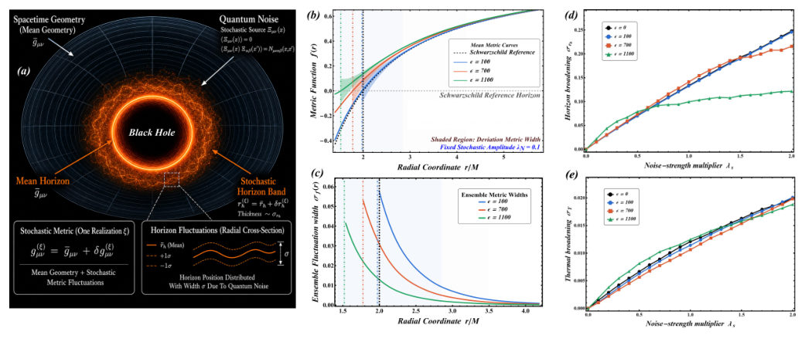
<figcaption class="paper-figure-caption"><b>Fig 1.</b> FIG. 1. Effective open black-hole geometry and stochastic broadening. (a) The metric is the open-system variable and quantum-field fluctuations are represented by an effective colored reservoir. The horizon is reconstructed from every metric realization rather than displaced independently. (b) Mean lapses; shading is an auxiliary localization profile. (c) Independent covariance-propagation check of the radial metric width. (d) Horizon and (e) thermal broadening from the production ensemble. The different ordering reflects sensitivity to the value and slope of the same stochastic lapse.</figcaption>
</figure>
<figure class="paper-figure-card">
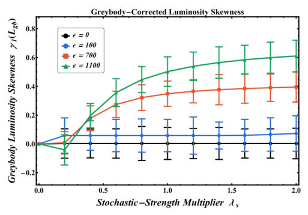
<figcaption class="paper-figure-caption"><b>Fig 2.</b> FIG. 3. Radiative non-Gaussianity. Corrected sam- ple skewness of the greybody-filtered luminosity distribution. The weakly dressed branches remain nearly symmetric, while the near-critical branches develop a positive tail. Error bars are bootstrap uncertainties. At λs = 0 the variance vanishes and skewness is undefined; the plotted origin is a zero-noise convention.</figcaption>
</figure>
<figure class="paper-figure-card">
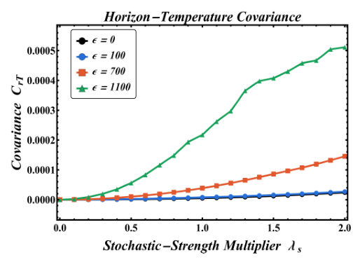
<figcaption class="paper-figure-caption"><b>Fig 3.</b> FIG. 2. Horizon–temperature covariance. Covariance between the reconstructed outer trapping horizon and its adi- abatic temperature. The enhancement for ǫ = 1100 follows from the reduced lapse slope near the root-merger point. Joint probability densities and the normalized correlation are shown in Supplemental Figs. S1 and S2 [22]. At weak stochastic strength, Λ(λs) = λs + O(λ2 s), so the widths begin linearly and CrT begins quadratically. At larger λs, the plotted curvature combines the pre- scribed amplitude map with solving for a moving zero, evaluating a derivative at that zero, and conditioning on a regular future-outer horizon. The robust result is the branch-to-branch enhancement at...</figcaption>
</figure>
<figure class="paper-figure-card">
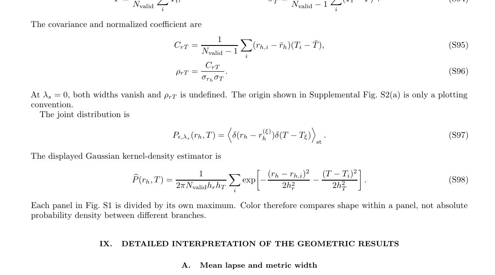
<figcaption class="paper-figure-caption"><b>Fig 4.</b> Figure 1(b) of the Letter compares feff(r) for the four values of ǫ. Because the ADM mass is fixed, all curves approach 1 −2M/r at large radius. Their separation is confined to the region in which the power-law tail in Eq. (S59) is appreciable. Increasing ǫ raises the positive r−3 term in Eq. (S63); the outer root therefore moves inward from the Schwarzschild value rh = 2. On the ǫ = 1100 branch, the outer and inner roots are already close compared with the weakly dressed branches. The shading in Fig. 1(b) is the prescribed profile Eq. (S81); it is not used in subsequent ensemble statistics. Figure 1(c) shows the lapse standard deviation obtained in the separate squared-exponential-kernel check...</figcaption>
</figure>
</div>

<p><strong>Summary.</strong> This work analyzes how colored noise induces measurable fluctuations in black hole observables near a critical point (double root) in an effective geometry. By tracking single realizations, the authors demonstrate that the geometric susceptibility strongly amplifies correlations between horizon position, temperature, and emitted radiation. This provides a powerful, semiclassical testbed for studying quantum gravity effects without requiring a full quantum treatment.</p>
<p><strong>Why it may be interesting.</strong> The explicit separation of source covariance from geometric root susceptibility provides a powerful, non-perturbative diagnostic tool for probing quantum gravitational effects in semiclassical black hole evaporation.</p>
<details>
<summary>Detailed structure</summary>
<p><strong>Main problem.</strong> To determine the joint statistics of observables (like horizon position, temperature, and luminosity) that probe different local features of a random, fluctuating black hole geometry, which cannot be captured by mean-field treatments.</p>
<p><strong>Main result.</strong> Near a critical double root merger in the effective geometry, colored noise induces strong, measurable correlations between horizon fluctuations, temperature, and radiative output, with the susceptibility acting as the key amplifier.</p>
<p><strong>Method.</strong> The analysis uses a stochastic-semiclassical model based on a quantum Langevin equation structure, mapping colored metric noise to correlated geometric, thermal, and radiative statistics via single-realization tracking.</p>
<p><strong>Model / system.</strong> The system is an effective, quasistationary spherical model of an evaporating black hole geometry, analyzed through its lapse function which exhibits a near-double root singularity. The fluctuations are driven by colored noise sources.</p>
<p><strong>Key observables.</strong> Outer trapping horizon location ($r_h$), adiabatic Hayward–Kodama temperature ($T$), greybody-filtered luminosity ($L_{	ext{gb}}$), and their joint covariance ($C_{rT}$).</p>
<p><strong>Important parameters / regimes.</strong> The mean dressing parameter ($\epsilon$), the noise strength ($\lambda_s$), and the critical value ($\epsilon_c$) marking the double root merger.</p>
<p><strong>Assumptions / limitations.</strong> The model is a stochastic-semiclassical testbed, not a microscopic evaluation of Unruh-state response; it uses an effective equal-time spherical projection.</p>
<p><strong>Figures summary.</strong> Figures illustrate the enhancement of horizon–temperature covariance near the critical point ($\epsilon=1100$) and show that the luminosity distribution develops a positive skewness (positive tail) when noise is finite.</p>
<p><strong>Paper structure.</strong> The paper develops the framework by formulating the stochastic geometry via a Langevin equation, then analyzes the joint statistics of horizon and temperature fluctuations near the double root, culminating in the calculation of non-Gaussianity in the radiated luminosity.</p>
</details>
<details>
<summary>Abstract</summary>
<p>Stress-tensor fluctuations carry information that is absent from the mean   semiclassical Einstein equation, but their observable effect depends as much   on the response of the geometry as on the noise itself. We formulate an   effective, quasistationary spherical model organized by the response--noise   structure of a quantum Langevin equation. A prescribed mean dressing and a   horizon-localized colored source are varied independently. For every source   realization we reconstruct the lapse, locate its outer trapping horizon, and   evaluate the adiabatic Hayward--Kodama temperature from the slope at that same   root. As the mean lapse approaches an inner--outer root merger, its inverse   slope acts as a geometric susceptibility: a fixed source covariance produces   enhanced horizon fluctuations, horizon--temperature covariance, and a   positively skewed, greybody-filtered luminosity. The specific advance is a   single-realization map from colored metric noise to correlated geometric,   thermal, and radiative statistics, together with an explicit separation of   reservoir strength from near-critical amplification. The model is a   stochastic-semiclassical testbed, not a microscopic evaluation of Unruh-state   response and noise kernels.</p>
</details>
<p><sub><a href="#top">↑ back to top</a></sub></p>

<p><a id="paper-2609.00239"></a></p>
<h3 id="entanglement-from-particle-number-fluctuations-in-a-second-order-topological-insulator"><a href="http://arxiv.org/abs/2609.00239v1">Entanglement from particle number fluctuations in a second-order topological insulator</a></h3>
<p><strong>Authors:</strong> Mahla Moridi Farimani, Kim Pöyhönen<br>
<strong>Type:</strong> theory · <strong>Category:</strong> other · <strong>PDF:</strong> <a href="https://arxiv.org/pdf/2609.00239v1">https://arxiv.org/pdf/2609.00239v1</a><br>
<strong>Analysis basis:</strong> full PDF text, analyzed in chunks
<strong>Topic relevance:</strong> <code>Full counting statistics</code> <strong>3/5</strong> · <code>analog quantum simulation</code> <strong>3/5</strong> · <code>quantum measurements</code> <strong>2/5</strong> · <code>Keldysh / 2PI / non-Gaussian methods</code> <strong>1/5</strong> · <code>methods for driven-dissipative</code> <strong>1/5</strong></p>
<div class="figure-strip-hint">↔ Scroll figures horizontally</div>
<div class="paper-figures-scroll">
<figure class="paper-figure-card">
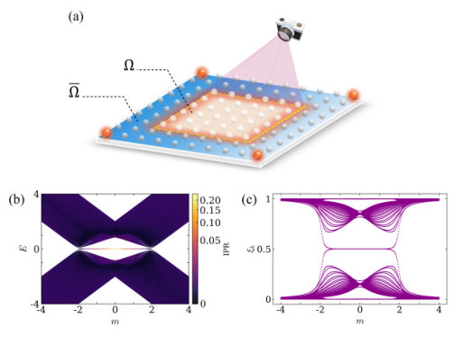
<figcaption class="paper-figure-caption"><b>Fig 1.</b> FIG. 1. (a) Schematic figure; entanglement properties are ob- tained by choosing a subsystem away from the boundaries of the system and performing measurements on the subsystem. This corresponds to making use of the reduced density matrix. (b) Energy spectrum of the model used here as a function of the parameter m for a system size L = 30. At m = ±2 the gap closes signifying a transition to a second-order topological insulator when |m| &lt; 2. The eigenvalues have been colored by the inverse participation ratio IPR = P</figcaption>
</figure>
<figure class="paper-figure-card">
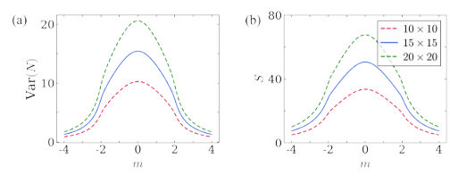
<figcaption class="paper-figure-caption"><b>Fig 2.</b> FIG. 2. (a) Particle number fluctuation of system size L = 30 and three different subsystem sizes (LΩ= 10, 15, 20) as a function of m. (b) The von Neumann entanglement entropy for the same subsystems.</figcaption>
</figure>
<figure class="paper-figure-card">
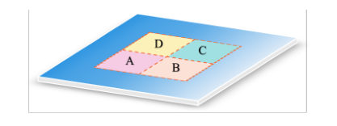
<figcaption class="paper-figure-caption"><b>Fig 3.</b> FIG. 3. Schematic of the partition of the subsystem used for obtaining entanglement quantities with trivial boundary contributions removed. An initial bipartition into Ωand ¯Ωis defined, and Ωis then further split into a quadripartition as shown.</figcaption>
</figure>
<figure class="paper-figure-card">
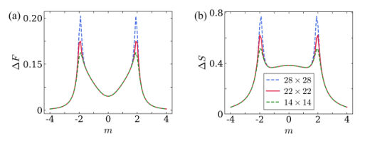
<figcaption class="paper-figure-caption"><b>Fig 4.</b> FIG. 4. (a) Modified fluctuations ∆F = VarNAB +VarNAD − VarNAC + VarNC −VarNABD for the setup in Fig. 3 as a function of m, with system size L = 30 and three different subsystem sizes (LΩ= 14, 22, 28) shown. The fluctuations are generally subsystem size invariant, and clearly take a higher value in the topological phase; at the phase transition, where the gap closes, size dependent peaks can be observed. (b) Modified entanglement entropy ∆S = SAB + SAD −SAC + SC −SABD for the same setup. Quantitative differences can be observed, but the qualitative features are similar.</figcaption>
</figure>
<figure class="paper-figure-card">
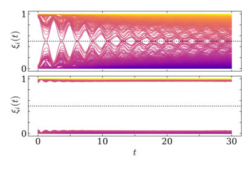
<figcaption class="paper-figure-caption"><b>Fig 5.</b> FIG. 5. The time evolution of the spectrum of the correlation matrix for system size L = 30 and subsystem size L/2. Top: A quench of trivial to topological parameter regime: mi = 2.5 and mf = 0.5. Bottom: A quench of trivial to trivial parameter regime: mi = 2.5 and mf = 4.</figcaption>
</figure>
</div>

<p><strong>Summary.</strong> This paper develops a novel theoretical method to detect topological phase transitions in higher-order topological insulators using particle number fluctuations. By employing a sophisticated quadripartite subtraction scheme, the authors successfully filter out trivial boundary noise that obscures the signal in standard entanglement measures. This establishes a scalable, experimentally relevant pathway for characterizing topological materials.</p>
<p><strong>Why it may be interesting.</strong> This work provides a concrete, measurable diagnostic tool ($\Delta F$) for detecting topological order in condensed matter systems, which is highly relevant for experimental condensed matter theorists.</p>
<details>
<summary>Detailed structure</summary>
<p><strong>Main problem.</strong> To find experimentally accessible quantities, like particle number fluctuations, that can reveal the topological phase transitions in higher-order topological insulators (HOTIs).</p>
<p><strong>Main result.</strong> Standard entanglement entropy and particle number fluctuations fail to show sharp topological signals due to boundary contributions, but a quadripartite construction successfully isolates these signals, revealing clear transition peaks.</p>
<p><strong>Method.</strong> The authors employ advanced subtraction schemes (quadripartite construction) applied to both entanglement entropy and particle number variance to filter out trivial boundary effects.</p>
<p><strong>Model / system.</strong> The study focuses on a two-dimensional second-order topological insulator, modeled by a specific Hamiltonian involving hopping and mass terms in orbital and spin space.</p>
<p><strong>Key observables.</strong> Bipartite entanglement entropy ($S_{vN}$), particle number fluctuation variance ($  ext{Var}N$), and their topologically corrected versions ($\Delta S, \Delta F$).</p>
<p><strong>Important parameters / regimes.</strong> The mass parameter $m$ controls the topological phase transition, and the analysis considers both static and time-evolution (quench) regimes.</p>
<p><strong>Assumptions / limitations.</strong> The primary assumption is that the topological contribution can be isolated by subtracting the contributions from smaller, non-topological subsystems (quadripartite construction).</p>
<p><strong>Figures summary.</strong> Figures illustrate the failure of raw entanglement/fluctuation measures to show transitions, contrasted with figures showing sharp peaks in the corrected quantities ($\Delta S, \Delta F$) at the critical points.</p>
<p><strong>Paper structure.</strong> The paper first establishes the physical system and the failure of standard measures. It then introduces the quadripartite subtraction scheme to derive corrected observables, demonstrating the clear topological signatures in both static and dynamic measurements.</p>
</details>
<details>
<summary>Abstract</summary>
<p>Higher-order topological insulators are materials with a bulk energy gap featuring gapless modes at $(d-n)$-dimensional edges, where $n > 1$. Despite this modified bulk-boundary correspondence, their nontrivial topology can nevertheless be observed through the bipartite entanglement spectrum. Inspired by works suggesting fluctuations in conserved quantities could be used to study topology in one-dimensional systems, which likewise feature zero-dimensional edge modes, we extend this treatment to a two-dimensional second-order topological insulator where corner states play an analogous role. We show that the standard bipartite entanglement entropy and particle number fluctuation lack striking signals of topological phase transitions, both in the static case and in the time evolution after a quench, obscured by an area-law term from the subsystem edges. By introducing a quadripartite construction of the subsystem, we show that it is possible to isolate the topological contributions, producing sharp transition peaks in both quantities, observable by studying subsystems much smaller than the full system. As particle number fluctuations are accessible in existing experiments, these results establish a concrete and scalable path to experimental detection of the entanglement in higher-order topological insulators.</p>
</details>
<p><sub><a href="#top">↑ back to top</a></sub></p>

<p><a id="paper-2609.01159"></a></p>
<h3 id="chemotaxis-induced-linear-instabilities-and-pattern-formation-in-a-reaction-diffusion-model"><a href="http://arxiv.org/abs/2609.01159v1">Chemotaxis-induced linear instabilities and pattern formation in a reaction-diffusion model</a></h3>
<p><strong>Authors:</strong> Mintu Karmakar, Abhik Basu<br>
<strong>Type:</strong> theory · <strong>Category:</strong> statistical mechanics · <strong>PDF:</strong> <a href="https://arxiv.org/pdf/2609.01159v1">https://arxiv.org/pdf/2609.01159v1</a><br>
<strong>Analysis basis:</strong> full PDF text, analyzed in chunks
<strong>Topic relevance:</strong> <code>non-equilibrium universality</code> <strong>3/5</strong> · <code>driven-dissipative phase transition</code> <strong>2/5</strong> · <code>Frenkel-Kontorova</code> <strong>1/5</strong> · <code>Keldysh / 2PI / non-Gaussian methods</code> <strong>1/5</strong> · <code>analog quantum simulation</code> <strong>1/5</strong> · <code>methods for driven-dissipative</code> <strong>1/5</strong></p>
<div class="figure-strip-hint">↔ Scroll figures horizontally</div>
<div class="paper-figures-scroll">
<figure class="paper-figure-card">
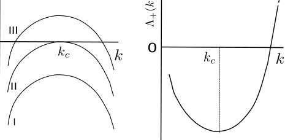
<figcaption class="paper-figure-caption"><b>Fig 1.</b> FIG. 1. Variation of Λ+(𝑘) as a function of 𝑘. (i) Reciprocal chemo- taxis: −∞&lt; 𝜉1𝜉2 &lt; 𝐷1𝐷2(𝑎𝑐+ 𝑏2 𝑐)/𝑏2 𝑐for which a pattern with a preferred wavevector 𝑘𝑐is possible. Curves I, II &amp; III corre- spond to no linear instability (uniform phase), threshold of instability with 𝑘= 𝑘𝑐becoming marginal, and a band of unstable wavevec- tors with the mode having 𝑘= 𝑘𝑐having the highest growth rate (pattern) in the linear stability analysis. (ii) Reciprocal chemotaxis: 𝜉1𝜉2 &gt; 𝐷1𝐷2(𝑎𝑐+ 𝑏2 𝑐)/𝑏2 𝑐for which there is instability for suffi- ciently large 𝑘for any region of the parameter space and 𝑘→∞ having the highest growth rate, signaling a chemotaxis induced in- stability. For nonreciprocal chemotaxis,...</figcaption>
</figure>
<figure class="paper-figure-card">
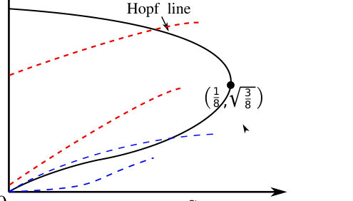
<figcaption class="paper-figure-caption"><b>Fig 2.</b> FIG. 2. Schematic phase boundaries in the 𝑎−𝑏plane. The black continuous line is the Hopf boundary given by (13). The blue and red broken lines are the lower and upper branches of the pattern boundaries for various 𝐷, 𝜉1, 𝜉2. The blue broken lines can be above or below the Hopf boundary; the red broken lines can meet the 𝑏-axis close to or away from the origin (see text).</figcaption>
</figure>
<figure class="paper-figure-card">
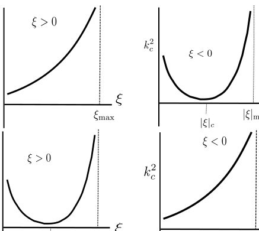
<figcaption class="paper-figure-caption"><b>Fig 3.</b> FIG. 3. Schematic variation of 𝑘2 𝑐with 𝜉in the fully reciprocal chemotaxis case : (top, left) (assuming 𝑏2 &gt; 𝑎) 𝜉&gt; 0 with 𝑘2 𝑐 rising monotonically with 𝜉, diverging as 𝜉→𝜉max = 𝐷1𝐷2(𝑎+ 𝑏2)/𝑏2, (top, right) (assuming 𝑏2 &gt; 𝑎) 𝜉&lt; 0 with 𝑘2 𝑐depending nonmonotonically on 𝜉, having a minimum at 𝜉= 𝜉reci and eventually</figcaption>
</figure>
<figure class="paper-figure-card">
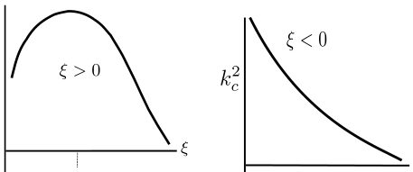
<figcaption class="paper-figure-caption"><b>Fig 4.</b> FIG. 4. Schematic variation of 𝑘2 𝑐with 𝜉in the extreme nonreciprocal chemotaxis case: (i) 𝜉&gt; 0 with 𝑘2 𝑐depending nonmonotonically on 𝜉and having a maximum at 𝜉= 𝜉nonreci, eventually approaching zero for very large 𝜉, (ii) 𝜉&lt; 0 with 𝑘2 𝑐decreasing monotonically with 𝜉, eventually vanishing for large |𝜉|.</figcaption>
</figure>
<figure class="paper-figure-card">
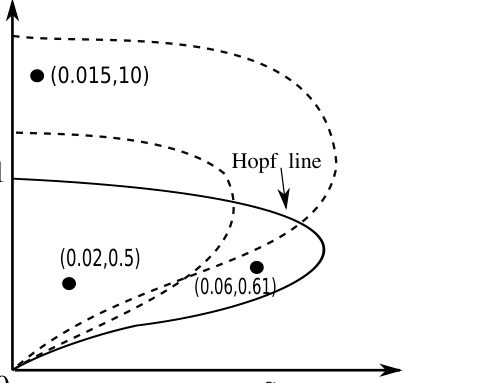
<figcaption class="paper-figure-caption"><b>Fig 5.</b> FIG. 5. Phase diagram in the (𝑎, 𝑏) plane for various 𝐷1 and 𝐷. Different points at which the DNS studies were done are marked.</figcaption>
</figure>
</div>

<p><strong>Summary.</strong> This paper analyzes pattern formation in a reaction-diffusion system modeling glycolysis that includes chemotaxis. Using linear stability analysis and DNS, the authors demonstrate that chemotaxis profoundly controls the resulting spatial patterns, leading to complex, nonmonotonic transitions between different stable states like spots and stripes. The work highlights chemotaxis as a powerful control parameter for pattern selection in non-equilibrium systems.</p>
<p><strong>Why it may be interesting.</strong> While focused on chemical kinetics, the mathematical framework of pattern selection, instability analysis, and non-equilibrium dynamics (like those seen in active matter) shares deep theoretical parallels with phase transitions and pattern formation studied in AMO physics and non-equilibrium statistical mechanics.</p>
<details>
<summary>Detailed structure</summary>
<p><strong>Main problem.</strong> The study investigates linear instabilities and pattern formation in a reaction-diffusion model that incorporates chemotactic interactions between two species.</p>
<p><strong>Main result.</strong> The model exhibits complex pattern selection, showing that chemotaxis acts as a nonmonotonic control parameter capable of inducing re-entrant transitions between homogeneous and patterned states, and controlling the morphology between spots and stripes.</p>
<p><strong>Method.</strong> The research employs linear stability analysis to determine bifurcation points and selected wavevectors, which are then complemented by extensive two-dimensional Direct Numerical Simulations (DNS) of the nonlinear partial differential equations.</p>
<p><strong>Model / system.</strong> The system is a spatially extended Selkov model for glycolysis, modeled by two coupled reaction-diffusion PDEs describing the concentrations of two species ($\phi$ and $\psi$). These equations include standard diffusion terms and nonlinear chemotactic coupling terms.</p>
<p><strong>Key observables.</strong> Bifurcation types (Hopf, Turing), selected wavevector ($k_c$), pattern morphologies (spots and stripes), and the dependence of these on chemotaxis strength.</p>
<p><strong>Important parameters / regimes.</strong> Chemotaxis coefficients ($\xi_1, \xi_2$), diffusion coefficients ($D_1, D_2$), and the wavevector $k$.</p>
<p><strong>Assumptions / limitations.</strong> The analysis assumes periodic boundary conditions and examines the infinite system size limit for linear stability analysis.</p>
<p><strong>Figures summary.</strong> Figures demonstrate pattern formation (uniform to periodic to stripe-like) as a function of diffusion coefficients and show the variation of pattern amplitudes ($\Delta\phi, \Delta\psi$) across different chemotactic regimes.</p>
<p><strong>Paper structure.</strong> The paper systematically moves from linear stability analysis to identify bifurcations, followed by DNS validation of the predicted instabilities and the investigation of nonlinear pattern transitions (spot-stripe) using amplitude equations.</p>
</details>
<details>
<summary>Abstract</summary>
<p>We study linear instabilities and pattern formation in a spatially extended Selkov model for glycolysis with diffusion and chemotactic interactions between two species. Linear stability analysis reveals two distinct bifurcations: a zero-wavevector, finite-frequency Hopf bifurcation leading to spatially homogeneous oscillations, and a finite-wavevector Turing instability with a saddle-node bifurcation leading to stationary inhomogeneous patterns. The selected wavevector, $k_c$, depends sensitively on the nature and strength of chemotaxis and varies nonmonotonically with the chemotaxis parameters, allowing re-entrant transitions between homogeneous and patterned states. For sufficiently strong chemotaxis, when the two species mutually attract or mutually repel each other, an unusual instability emerges in which the preferred wavevector diverges as a finite threshold in chemotactic strength is approached. We complement the linear analysis with extensive direct numerical simulations (DNS) of the nonlinear partial differential equations in two dimensions. The DNS confirm the predicted instabilities and their nonmonotonic and re-entrant character, and also reveal spatially uniform oscillatory states for suitable parameters. The stationary patterns include spots and, unexpectedly, stable stripes. We further uncover transitions between spot and stripe morphologies controlled by chemotactic strength and diffusivity ratios. The stability of the striped states is consistent with linear amplitude equations, whereas the spot-stripe transition is attributed to nonlinear effects beyond linear stability. Our results demonstrate that chemotaxis can act as a nonmonotonic control parameter for instability selection, wavelength selection, re-entrant pattern formation, and nonlinear pattern morphology in reaction-diffusion systems.</p>
</details>
<p><sub><a href="#top">↑ back to top</a></sub></p>

<p><a id="paper-2609.00594"></a></p>
<h3 id="gw-and-bethe-salpeter-theory-for-molecular-polaritons-quasiparticles-and-excitons"><a href="http://arxiv.org/abs/2609.00594v1">GW and Bethe-Salpeter Theory for Molecular Polaritons, Quasiparticles, and Excitons</a></h3>
<p><strong>Authors:</strong> Soohaeng Yoo Willow, Gi Beom Sim, Tae Hyeon Park, Tae In Kim, D. ChangMo Yang, Mikuláš Matoušek, Jiří Brabec, Libor Veis, Chang Woo Myung<br>
<strong>Type:</strong> theory · <strong>Category:</strong> other · <strong>PDF:</strong> <a href="https://arxiv.org/pdf/2609.00594v1">https://arxiv.org/pdf/2609.00594v1</a><br>
<strong>Analysis basis:</strong> full PDF text, analyzed in chunks
<strong>Topic relevance:</strong> <code>Tavis-Cummings &amp; cavity-many-emitter</code> <strong>3/5</strong> · <code>Keldysh / 2PI / non-Gaussian methods</code> <strong>2/5</strong> · <code>methods for driven-dissipative</code> <strong>2/5</strong> · <code>analog quantum simulation</code> <strong>1/5</strong> · <code>interference shaping light</code> <strong>1/5</strong></p>
<div class="figure-strip-hint">↔ Scroll figures horizontally</div>
<div class="paper-figures-scroll">
<figure class="paper-figure-card">
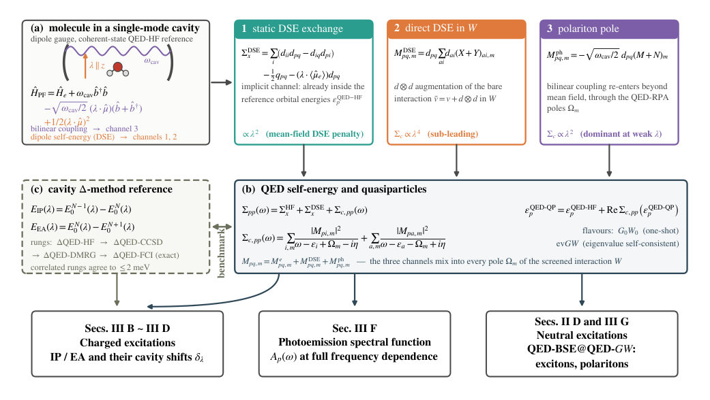
<figcaption class="paper-figure-caption"><b>Fig 1.</b> FIG. 1. Organization of the QED contributions to the electron self-energy. (a) A molecule in a single-mode cavity [Eq. (1)] on a coherent-state QED-HF reference, with the coupling vector λ polarized along the molecular symmetry axis z. Its two light–matter terms reach the self-energy through three channels. Channel 1, the static dipole-self-energy (DSE) exchange, is implicit in the reference orbital energies εQED-HF p . Channels 2 and 3 are explicit in the transition densities [Eq.(17)]: the direct d ⊗d augmentation M DSE and the polariton pole M ph. (b) The channels mix into every QED-RPA pole Ωm and assemble the self-energy Σc, solved in one-shot (G0W0) and eigenvalue-self-consistent...</figcaption>
</figure>
<figure class="paper-figure-card">
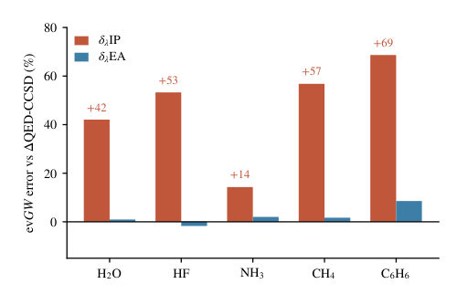
<figcaption class="paper-figure-caption"><b>Fig 2.</b> FIG. 2. Relative error of the evGW cavity-induced shifts against ∆QED-CCSD, δλXevGW /δλX∆QED-CCSD −1, for the cc-pVDZ entries of Table III (λ = 0.05); positive means the cavity-induced shift is too large in magnitude. The two ob- servables behave oppositely. The ionization shift is overesti- mated for every system, by +14% (NH3) to +69% (benzene), whereas the attachment shift is reproduced to within 2% for the hydrides and 9% for benzene, and is the one channel where the error changes sign (HF). Taking ∆QED-DMRG as the ref- erence instead moves the hydride bars at most one percentage point.</figcaption>
</figure>
<figure class="paper-figure-card">
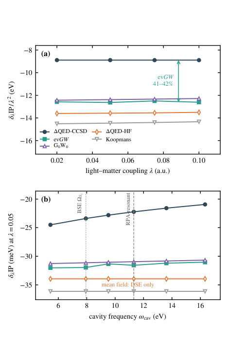
<figcaption class="paper-figure-caption"><b>Fig 3.</b> FIG. 3. Coupling-strength and detuning dependence of the cavity-induced IP shift of H2O/cc-pVDZ. (a) δλIP/λ2 ver- sus λ at ωcav = 11.31 eV: a λ2 law appears as a horizon- tal line and a method’s fractional error as a constant offset, and the evGW overestimate stays at 41–42% over a factor of five in λ. (b) δλIP versus ωcav at λ = 0.05: the Koopmans and ∆QED-HF shifts are exactly ωcav-independent, and the correlated shift varies monotonically with no feature at the RPA-resonant tuning (dashed) or the BSE optical gap (dot- ted). The shift is DSE-driven, not resonance-driven.</figcaption>
</figure>
<figure class="paper-figure-card">
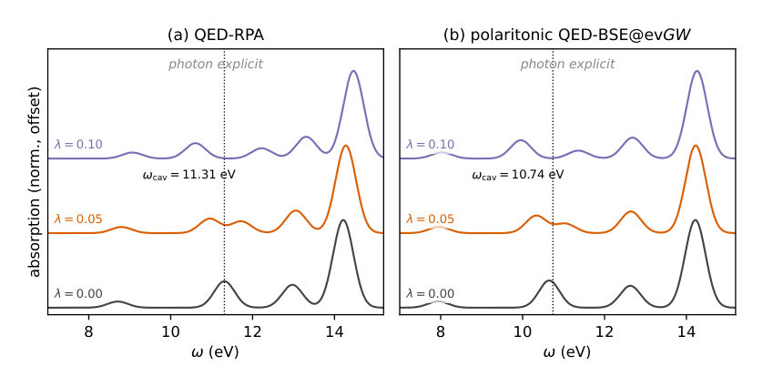
<figcaption class="paper-figure-caption"><b>Fig 4.</b> FIG. 4. Cavity-modified absorption of H2O/cc-pVDZ at λ = 0, 0.05, and 0.10 (normalized to the tallest peak, offset vertically; Gaussian broadening 0.25 eV). (a) QED-RPA, tuned to the lowest dipole-allowed RPA root (ωcav = 11.31 eV). (b) polaritonic QED-BSE@evGW [Eq. (25)], tuned to the bright BSE singlet at ωcav = 10.74 eV (dotted lines). In both panels the photon is explicit, so the cavity-resonant band Rabi-splits, by 0.77 →1.62 eV in (a) and 0.71 →1.41 eV in (b). The QED-RPA poles Ωm of panel (a) are those entering W [Eq. (13)].</figcaption>
</figure>
<figure class="paper-figure-card">
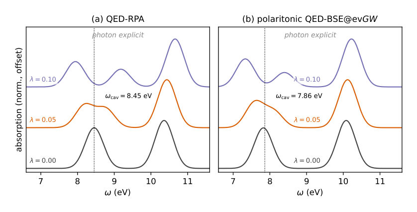
<figcaption class="paper-figure-caption"><b>Fig 5.</b> FIG. 5. As Fig. 4, for NH3/cc-pVDZ and zoomed to the cavity-resonant band. In C3v the z-polarized cavity couples only to the z-polarized A1 transitions, so it is tuned to the lowest dipole-allowed A1 root (RPA ωcav = 8.45 eV; BSE analogue 7.86 eV, dotted lines). This A1 band Rabi-splits in both explicit-photon panels; the neighbouring ∼10 eV degenerate E (x, y) feature, dark to the z-cavity, is unshifted and serves as a reference.</figcaption>
</figure>
</div>

<p><strong>Summary.</strong> This paper develops a theoretical framework to calculate quasiparticle and exciton properties of molecules coupled to an optical cavity using QED-GW and BSE methods. It rigorously analyzes how the cavity modifies electronic excitations by incorporating the cavity field into the self-energy calculation. The results provide quantitative benchmarks for cavity-induced energy shifts, advancing the understanding of molecular polaritons.</p>
<p><strong>Why it may be interesting.</strong> This work is highly relevant as it directly tackles the theoretical description of light-matter interaction in molecular systems, which is a core topic in cavity QED and molecular physics.</p>
<details>
<summary>Detailed structure</summary>
<p><strong>Main problem.</strong> The paper addresses how the inclusion of an optical cavity modifies the electron self-energy within quasiparticle theory for molecular systems.</p>
<p><strong>Main result.</strong> The calculations show that cavity-induced shifts in electron affinities are reproduced nearly quantitatively, and the error in the GW approach is linked to missing correlated electron-photon contributions.</p>
<p><strong>Method.</strong> The study employs advanced quantum electrodynamics (QED) techniques, specifically using the GW approximation and the Bethe-Salpeter Equation (BSE) within a coherent-state framework.</p>
<p><strong>Model / system.</strong> The system modeled is a molecule placed inside a single-mode optical cavity, described using the dipole-gauge Pauli-Fierz Hamiltonian. Calculations are benchmarked against correlated wave-function methods.</p>
<p><strong>Key observables.</strong> Ionization potentials (IPs), electron affinities (EAs), and the spectral function, which exhibits a polariton-replica photoemission sideband.</p>
<p><strong>Important parameters / regimes.</strong> The cavity coupling strength ($\lambda$) and the detuning ($\Delta$) are key parameters, with errors found to be predominantly quadratic in $\lambda$.</p>
<p><strong>Assumptions / limitations.</strong> The analysis assumes the use of the dipole gauge and the dipole approximation. Furthermore, exciton-binding energies involving unbound anions are noted to be basis-dependent diagnostics.</p>
<p><strong>Figures summary.</strong> Not specified in the provided notes.</p>
<p><strong>Paper structure.</strong> The paper systematically introduces the problem by detailing the three channels through which the cavity enters the self-energy, benchmarks the QED-GW results against a ladder of correlated wave-function methods, and analyzes the resulting spectral features and energy shifts.</p>
</details>
<details>
<summary>Abstract</summary>
<p>The electron self-energy is central to quasiparticle theory, yet how an optical cavity enters it remains unclear. We address this question for a molecule in a single-mode cavity using the dipole-gauge Pauli-Fierz Hamiltonian and a coherent-state QED Hartree-Fock reference. The cavity enters through three channels: the static dipole self-energy (DSE) shift of reference orbital energies, direct DSE augmentation of the screened interaction, and the polariton pole carrying the bilinear electron-photon coupling. We benchmark QED-$GW$ ionization potentials (IPs) and electron affinities (EAs) against a cavity $Δ$-method ladder from QED-HF to correlated wave-function methods, whose cavity-induced shifts agree within 1 meV where directly comparable. For closed-shell molecules with unbound anions, $GW$ systematically overestimates cavity-induced IP redshifts, whereas EA shifts are reproduced nearly quantitatively, although this does not imply comparable accuracy for absolute EAs. For ionic molecules with bound anions, this ordering reverses, consistent with published QED coupled-cluster results. Coupling and detuning scans show that the error is predominantly quadratic in $λ$ and DSE-driven rather than resonant. The spectral function develops a polariton-replica photoemission sideband with weight scaling as $λ^2$. In the static screened interaction used in the Bethe-Salpeter equation, bare-photon exchange cancels the matching DSE contribution to the direct interaction, while exchange and polariton-screening corrections remain. Their net effect on the lowest excitation is appreciable only for ammonia in the molecules studied. Exciton-binding energies involving unbound anions are strongly basis-dependent and should therefore be viewed as diagnostics of electron-hole interactions rather than basis-converged molecular quantities.</p>
</details>
<p><sub><a href="#top">↑ back to top</a></sub></p>

<p><a id="paper-2609.00910"></a></p>
<h3 id="synchronization-pathways-and-resilience-in-power-grids"><a href="http://arxiv.org/abs/2609.00910v1">Synchronization Pathways and Resilience in Power Grids</a></h3>
<p><strong>Authors:</strong> Cook Hyun Kim, Jihye Kim, Sangjoon Park, B. Kahng<br>
<strong>Type:</strong> theory · <strong>Category:</strong> statistical mechanics · <strong>PDF:</strong> <a href="https://arxiv.org/pdf/2609.00910v1">https://arxiv.org/pdf/2609.00910v1</a><br>
<strong>Analysis basis:</strong> full PDF text, analyzed in chunks
<strong>Topic relevance:</strong> <code>non-equilibrium universality</code> <strong>3/5</strong> · <code>driven-dissipative phase transition</code> <strong>2/5</strong> · <code>Keldysh / 2PI / non-Gaussian methods</code> <strong>1/5</strong> · <code>analog quantum simulation</code> <strong>1/5</strong> · <code>correlated / nonlocal dissipation</code> <strong>1/5</strong> · <code>methods for driven-dissipative</code> <strong>1/5</strong></p>
<div class="figure-strip-hint">↔ Scroll figures horizontally</div>
<div class="paper-figures-scroll">
<figure class="paper-figure-card">
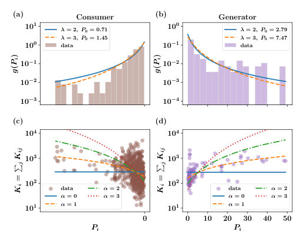
<figcaption class="paper-figure-caption"><b>Fig 1.</b> FIG. 1. Power distribution and total coupling strength of the French transmission grid. Node data from the French subgraph of the PanTaGruEl model [22], with con- sumer buses (a,c) and generator buses (b,d) treated separately. (a,b) Power distribution g(P) (bars), with (|Pi| + P0)−λ for λ = 2 (solid) and λ = 3 (dashed); P0 is fitted for each curve and given in the legend. Each class spans more than a factor of 10 in |Pi|. (c,d) Total coupling strength Ki = P</figcaption>
</figure>
<figure class="paper-figure-card">
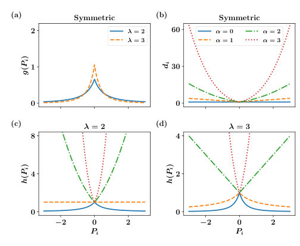
<figcaption class="paper-figure-caption"><b>Fig 2.</b> FIG. 2. Rotor population, coupling-weight profile, and nucleation strength versus power P. (a) Power distribu- tion g(P) for λ = 2, 3, peaked at P = 0. For illustration, P0 = 0 is used. (b) Coupling-weight profile d(P) for α = 0, 1, 2, 3, in- creasing toward both tails. (c,d) Nucleation strength h(P) for λ = 2 (c) and λ = 3 (d). For α &lt; λ/2, h(P) peaks at P = 0 (population-driven); for α &gt; λ/2, h(P) increases toward the tails (coupling-driven). At αc = λ/2, the two contributions balance. For λ = 3, α = 1 and α = 2 lie at equal distance from αc = 1.5, on opposite sides.</figcaption>
</figure>
<figure class="paper-figure-card">
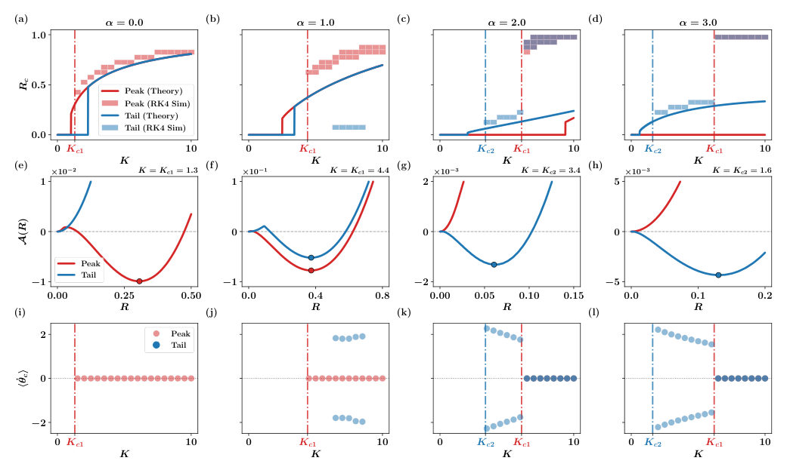
<figcaption class="paper-figure-caption"><b>Fig 3.</b> FIG. 3. Population-driven and coupling-driven synchronization (symmetric distribution, m = 10). (a–d) Rc versus K. Solid curves: population-driven (red) and coupling-driven (blue) pathways predicted by the ad hoc potential A(Rc) accumulated along each propagation path. Squares: the most populated Rc bins over 64 realizations at each K for each propagation path. Dash-dotted vertical lines: predicted onsets Kc1 (red) and Kc2 (blue). (e–h) A(Rc) along the population-driven (red) and coupling-driven (blue) pathways at specific K (indicated above each panel). Circles mark the potential minima R∗ c. The potential gap in (g) reduces zero as α →1.5. (i–l) Modal positions of the mean cluster angular...</figcaption>
</figure>
<figure class="paper-figure-card">
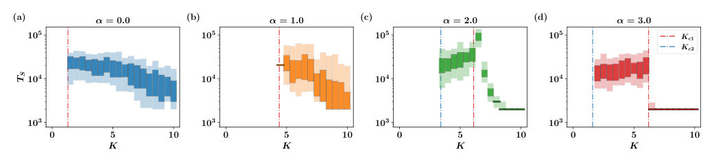
<figcaption class="paper-figure-caption"><b>Fig 4.</b> FIG. 4. The distribution of the transient time distinguishes accretion from merger (symmetric distribution, m = 10). (a–d) TS over 64 realizations versus K, for α = 0, 1, 2, 3. At each K, the light box spans Q5–Q95 and the dark box spans Q25–Q75; where the two quartiles coincide, a horizontal bar marks the median (Sec. S1 of the Supplemental Material [23]). The vertical axis is logarithmic and identical in all panels, from the fine-window resolution 103 to 1.2 × 105 time units. A quantile below 103 is unresolved and is not drawn, and a box extending above 1.2 × 105 is clipped at the top. Panels (a–c) cover K ≤10 and panel (d) covers K ≤20. Dash-dotted verticals: measured onsets Kc1 (red)...</figcaption>
</figure>
<figure class="paper-figure-card">
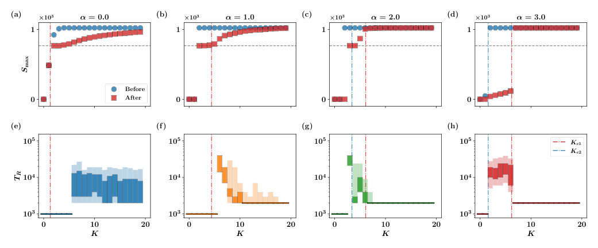
<figcaption class="paper-figure-caption"><b>Fig 5.</b> FIG. 5. Robustness and resilience of the synchronized state (symmetric distribution, m = 10). (a–d) Largest cluster size Smax before (blue) and after (red) the perturbation, versus K; medians over 64 realizations, with the protocol given in Sec. S1 7 of the SM. Population-driven regime (α = 0, 1): a macroscopic cluster survives at every K above onset and recovers gradually by accretion. Coupling-driven regime (α = 2, 3): no macroscopic cluster survives at low K, whereas the unperturbed value is restored in full at high K by merger. (e–h) Recovery time TR over the same realizations, with the same box construction as in Fig. 4. The quantiles include all 64 realizations; a quantile beyond the...</figcaption>
</figure>
</div>

<p><strong>Summary.</strong> This work analyzes power grid synchronization using a modified Kuramoto model, establishing that the synchronization pathway depends critically on the underlying power and coupling distribution statistics. By developing a pathway-based framework using an ad hoc potential, the authors distinguish between two regimes: population-driven growth from the center and coupling-driven growth from the periphery. This provides a general tool for understanding system resilience beyond simple static stability criteria.</p>
<p><strong>Why it may be interesting.</strong> While applied to power grids, the mathematical framework—using effective potentials and analyzing phase transitions/cluster dynamics—is highly relevant to non-equilibrium statistical mechanics, particularly in systems exhibiting collective synchronization or pattern formation.</p>
<details>
<summary>Detailed structure</summary>
<p><strong>Main problem.</strong> The paper investigates the microscopic mechanisms governing the nucleation and propagation of synchronized clusters in power grids, and how these mechanisms dictate grid stability and recovery after disturbances.</p>
<p><strong>Main result.</strong> Two distinct synchronization pathways—population-driven (center to tails) and coupling-driven (tails to center)—are revealed, depending on the relative exponents of the power and coupling distributions. The framework emphasizes pathway dynamics over static criteria for understanding grid resilience.</p>
<p><strong>Method.</strong> The analysis employs a minimal model based on the second-order Kuramoto model, utilizing the ad hoc potential method to map out the effective potential landscape governing cluster growth and selection.</p>
<p><strong>Model / system.</strong> The system models power grids using the swing equation, formulated as a second-order Kuramoto model incorporating correlations between power output and coupling strength. The dynamics are analyzed using empirical data profiles for power distribution and coupling weights.</p>
<p><strong>Key observables.</strong> Weighted cluster order parameter ($R_c$), transient time ($T_S$), robustness ($S_{max}$), and recovery time ($T_R$).</p>
<p><strong>Important parameters / regimes.</strong> The exponents $\lambda$ and $\alpha$ determine the regime: population-driven if $\alpha < \lambda/2$, and coupling-driven if $\alpha > \lambda/2$. Inertia is a key parameter controlling cluster persistence.</p>
<p><strong>Assumptions / limitations.</strong> The analysis relies on the ad hoc potential method, which is noted to neglect inter-cluster interactions, and the model assumes specific functional forms for power and coupling weights derived from empirical data.</p>
<p><strong>Figures summary.</strong> Figures illustrate the dependence of the nucleation strength $h(P)$ on $\alpha$ (determining center vs. tail maxima), and compare predicted vs. simulated synchronization pathways ($R_c$ vs $K$) for different regimes, confirming the existence of distinct propagation mechanisms.</p>
<p><strong>Paper structure.</strong> The paper progresses by defining the physical model and identifying the core problem, developing the ad hoc potential framework, deriving the two distinct pathway regimes based on parameter exponents ($\alpha$ vs $\lambda/2$), and finally validating these pathways by analyzing recovery dynamics and applying the framework to real-world power grid data.</p>
</details>
<details>
<summary>Abstract</summary>
<p>Ensuring a sustainable energy supply requires maintaining power-grid stability. Rotor dynamics are governed by the swing equation, which takes the form of a second-order Kuramoto model with a correlation between power and total coupling strength. Yet the microscopic mechanisms that nucleate and propagate synchronized clusters remain poorly understood. Using a minimal model motivated by empirical grid data and the \Adhoc potential method, we reveal two distinct seed cluster types and propagation pathways: a population-driven seed cluster at the center of the power distribution propagating to its tails by rotor accretion, and, for a symmetric distribution, coupling-driven seed clusters at its tails propagating inward to the center by cluster merger. These differences generate distinct order-parameter patterns, while inertia controls whether the seed clusters persist with distinct angular velocities. The same propagation pathways also govern recovery following external disturbances. We further confirm that the same selection--persistence rule holds in data-derived annealed representations of European power grids. Therefore, our results can inform strategies for sustaining stable power-grid operation. More generally, our pathway-based framework reframes synchronization by emphasizing the dynamics of cluster formation and recovery rather than relying solely on static criteria.</p>
</details>
<p><sub><a href="#top">↑ back to top</a></sub></p>

<p><a id="paper-2609.00725"></a></p>
<h3 id="efficiently-classifying-shocks-in-complex-systems-requires-dormant-reporters"><a href="http://arxiv.org/abs/2609.00725v1">Efficiently classifying shocks in complex systems requires dormant reporters</a></h3>
<p><strong>Authors:</strong> David A. Brewster, Philippe Cluzel<br>
<strong>Type:</strong> theory · <strong>Category:</strong> disordered systems and neural networks · <strong>PDF:</strong> <a href="https://arxiv.org/pdf/2609.00725v1">https://arxiv.org/pdf/2609.00725v1</a><br>
<strong>Analysis basis:</strong> full PDF text, analyzed in chunks
<strong>Topic relevance:</strong> <code>quantum measurements</code> <strong>3/5</strong> · <code>methods for driven-dissipative</code> <strong>2/5</strong> · <code>analog quantum simulation</code> <strong>1/5</strong> · <code>driven-dissipative phase transition</code> <strong>1/5</strong> · <code>non-equilibrium universality</code> <strong>1/5</strong></p>
<div class="figure-strip-hint">↔ Scroll figures horizontally</div>
<div class="paper-figures-scroll">
<figure class="paper-figure-card">

<figcaption class="paper-figure-caption"><b>Fig 1.</b> Figure 1: Shock classification from partially observed dynamics in a Boolean threshold network. a, Several examples of domains where complex systems can be modeled as a Boolean network. Created in BioRender https://BioRender.com/46jpe5e. b, Our Boolean networks use threshold updating. Input nodes can either be active or inactive. Connections can be enabling (positive weight, pointed arrowhead) or repressing (negative weight, flat arrowhead), each with varying strengths. The active input nodes are weighed by their connections and summed. If the sum is positive (negative), the output of the threshold gate becomes active (inactive, respectively). At each time step, each node in the network...</figcaption>
</figure>
<figure class="paper-figure-card">

<figcaption class="paper-figure-caption"><b>Fig 2.</b> Figure 2: Phase transitions between order and chaos. a, Steady state Hamming distance between trajectories started from imperfect copies of the same initial condition at noise ε = 0.02, as a function of the degree exponent γ for 4 different network sizes. Each network contributes every pair of its 10 replicates. Curves show the mean over 100 networks per point with 95% confidence bands. White stars on the horizontal axis mark the critical exponent γc(N) predicted by the annealed calculation in the SI, where criticality occurs when the mean connectivity crosses Kc ≈4π/3. In the inset panel, the phase diagram is in the (γ, N) plane. The boundary curve γc(N) separates the chaotic and frozen...</figcaption>
</figure>
<figure class="paper-figure-card">

<figcaption class="paper-figure-caption"><b>Fig 3.</b> Figure 3: The elbow of the accuracy curve sits at 8 reporters, and evolved panels mix 3 classes of them. a, Classification accuracy versus panel size m for panels selected by the genetic algorithm and for random panels, at noise ε = 0, 0.5, and 1. The elbow of the evolved curve sits at m = 8 at every noise level, and a random panel needs more than 10 times as many reporters to match an evolved panel of 8. b, The effective number of shocks each member responds to, by member rank, across all 50 networks. It falls from about 9 for the most sensitive member to between 3 and 5 for the least, with darker shades lower noise as in a. c, The highly sensitive fraction of the panel versus m, against...</figcaption>
</figure>
<figure class="paper-figure-card">

<figcaption class="paper-figure-caption"><b>Fig 4.</b> Figure 4: Nearly every evolved panel mixes promiscuous reporters with dormant reporters. Each of the 50 rays is one network’s evolved panel of 8 reporters at high noise (ε = 1). Each small disk shows one member’s sensitivity to the 10 shocks, as in Figure 3f. Each wedge is one shock, and wedge length and color depth both give the sensitivity of that member to that shock, on the shared scale below. The classes are those defined in Figure 3e from a node’s response across shocks. Promiscuous members respond to nearly every shock and are drawn with orange wedges on white. Dormant members concentrate their response in only a few shocks and are drawn with black wedges on a translucent orange...</figcaption>
</figure>
<figure class="paper-figure-card">

<figcaption class="paper-figure-caption"><b>Fig 5.</b> Figure 5: Evolved panels nearly always mix sensitive and insensitive reporters, and the balance of their importance shifts with noise. a, Classification accuracy of evolved and random panels of 8 reporters as a function of the initial condition noise ε. b, Number of sensitive nodes per evolved panel against the random expectation. c, Accuracy drop after removing one sensitive or one insensitive member from an evolved panel. Both penalties climb as noise grows, and losing a sensitive member costs more at every level. d, The low sensitivity share of the total removal penalty slightly rises with noise, suggesting that the curves from c are getting slightly closer to each other. e, The extra...</figcaption>
</figure>
</div>

<p><strong>Summary.</strong> This paper addresses the critical problem of efficiently monitoring complex dynamical systems to diagnose external perturbations ('shocks'). It finds that the best monitoring strategy requires combining two distinct types of sensors: those sensitive to many events and those stable across trials. This provides a low-cost, practical design principle for monitoring large, noisy systems.</p>
<p><strong>Why it may be interesting.</strong> While not quantum, the study deals with complex, non-linear dynamics and information extraction from noisy, high-dimensional state spaces, which shares conceptual parallels with characterizing quantum states or diagnosing open quantum systems.</p>
<details>
<summary>Detailed structure</summary>
<p><strong>Main problem.</strong> Determining the optimal, sparse set of components (reporters) to monitor in a large complex system to accurately classify the type of external perturbation ('shock') that occurred, especially when initial conditions are noisy.</p>
<p><strong>Main result.</strong> The optimal monitoring panel must mix two types of reporters: promiscuous reporters (responsive to many shocks) and dormant reporters (responsive strongly to few shocks), achieving high accuracy with very few sensors.</p>
<p><strong>Method.</strong> The authors developed an efficient algorithm to select the optimal panel composition by analyzing the information content and stability of reporter responses under noise.</p>
<p><strong>Model / system.</strong> The system is modeled as a Boolean threshold network with heterogeneous connectivity, subjected to external 'shocks' (perturbations) and measurement noise ($\epsilon$).</p>
<p><strong>Key observables.</strong> Classification accuracy of the shock type, reporter states $r(t)$, and the sensitivity of individual nodes to different shocks.</p>
<p><strong>Important parameters / regimes.</strong> Noise parameter $\epsilon \in [0, 1]$, the number of reporters ($m$), and the connectivity structure (power law out-degree).</p>
<p><strong>Assumptions / limitations.</strong> The system dynamics can be captured by a Boolean threshold network, and the optimal monitoring strategy involves a specific mixture of reporter types.</p>
<p><strong>Figures summary.</strong> Figures illustrate the dynamics, the shock effect, the noise model, and the final inference task using reporter states, comparing performance of different panel selection strategies.</p>
<p><strong>Paper structure.</strong> The paper establishes the problem of shock classification in complex systems, models the dynamics using Boolean networks, analyzes the failure of simple heuristics under noise, and finally proposes and validates the optimal mixed-reporter panel selection principle.</p>
</details>
<details>
<summary>Abstract</summary>
<p>Many natural and engineered systems are large complex networks of interacting components, and external perturbations drive them along different dynamical paths. Identifying which perturbation occurred matters for diagnosis, control, and prediction. Yet often times only a few components can be jointly monitored. Which components should be monitored? Experimental practice usually favors placing reporters at the most sensitive sites, where perturbations produce the largest effects. Using a simple dynamical model for complex systems with heterogeneous connectivity, we ask how sparse reporter panels should be chosen to classify shocks from partial trajectories when repeated trials only approximately reproduce an ideal initial condition. Once that reproduction is imperfect, sensitivity ranked panels fall far short of optimal, and the shortfall grows with the noise. We find that the best panels mix two kinds of reporters. A promiscuous reporter responds to most shocks, so it separates them mainly by degree, and degree fluctuates from trial to trial. A dormant reporter responds to only a few shocks but strongly, and its answers do not scatter as much between trials. As noise grows, the cost of losing a dormant reporter rises to meet the cost of losing a promiscuous one. Panels of either kind alone classify worse than the mixture, and no property of the members collected individually explains the ordering. Most of all, we find that only a minuscule number of reporters are needed on a panel to accurately identify which shock hit the system. We implement an efficient algorithm to assemble such a panel. Together these results provide a low cost practical design principle for monitoring large complex dynamical systems.</p>
</details>
<p><sub><a href="#top">↑ back to top</a></sub></p>

<p><a id="paper-2609.00939"></a></p>
<h3 id="robust-cz-gate-against-flux-line-memory"><a href="http://arxiv.org/abs/2609.00939v1">Robust CZ gate against flux line memory</a></h3>
<p><strong>Authors:</strong> Yao Song, Xiu-Hao Deng<br>
<strong>Type:</strong> theory · <strong>Category:</strong> quantum information and computing · <strong>PDF:</strong> <a href="https://arxiv.org/pdf/2609.00939v1">https://arxiv.org/pdf/2609.00939v1</a><br>
<strong>Analysis basis:</strong> full PDF text, analyzed in chunks
<strong>Topic relevance:</strong> <code>QC/QI experiment</code> <strong>3/5</strong> · <code>Keldysh / 2PI / non-Gaussian methods</code> <strong>2/5</strong> · <code>methods for driven-dissipative</code> <strong>2/5</strong> · <code>quantum measurements</code> <strong>1/5</strong></p>
<div class="figure-strip-hint">↔ Scroll figures horizontally</div>
<div class="paper-figures-scroll">
<figure class="paper-figure-card">

<figcaption class="paper-figure-caption"><b>Fig 1.</b> Fig. 1. Stateful actuator–quantum dynamics of flux line distortion. (a) Predistortion calibrated at the zero initial state, xin = 0, maps the desired dynamic flux ∆Φdes(t) to the AWG-side input upre(t). The input and initial actuator state jointly determine the delivered dynamic flux ∆Φ(t) and hence the total flux Φ(t) that drives the quantum system. (b) Without predistortion, the flux line distorts the desired waveform. Gate-local predistortion reproduces the desired flux for xin = 0, but a nonzero initial state adds the free response of the flux line and produces a flux mismatch. (c) In a CZ sequence, the actuator residual left at one gate exit evolves through the idle interval and...</figcaption>
</figure>
<figure class="paper-figure-card">

<figcaption class="paper-figure-caption"><b>Fig 2.</b> Fig. 2. The flux dependence of the tunable coupler determines the CZ interaction and the first-order sensitivity of the gate to the initial actuator state. (a) Two fixed-frequency qubits coupled through a tunable coupler. The delivered flux Φ(t) tunes the coupler frequency ωc[Φ(t)]. (b) Flux dependence of ωc/2π for the asymmetric SQUID over the accessible interval |Φ| ≤0.30Φ0. The gray dotted line marks the idle point, and the orange dashed lines mark ±ΦCZ. (c) Spectrum in the two-excitation manifold as ωc/2π is tuned from its 6.0 GHz idle value toward the CZ interaction. Energies are referenced to the bare |101⟩level; solid and dashed curves denote dressed and bare energies, respectively....</figcaption>
</figure>
<figure class="paper-figure-card">

<figcaption class="paper-figure-caption"><b>Fig 3.</b> Fig. 3. One-pole validation of memory robustness and state closing. (a) Unit step response of the one-pole flux line model (upper) and desired flux pulses optimized for the baseline and memory-robust CZ gates (lower). (b) Normalized magnitudes of the logical and leakage error generators and the state closing residual. Labels above the bars give the reduction factors relative to the baseline. (c) Average fidelity versus the initial actuator state. The inset shows 1 −Favg for xin &gt; 0 on logarithmic axes. xc marks the end of the first-order robustness plateau, and the dashed lines are power law fits to 1 −Favg ∝xm in. (d) Cumulative infidelity for 20 consecutive CZ gates with no waiting...</figcaption>
</figure>
<figure class="paper-figure-card">

<figcaption class="paper-figure-caption"><b>Fig 4.</b> Fig. 4. Memory-robust CZ pulse in a three-pole flux line model. (a) Unit step response of the fitted model (black) and the fast, intermediate, and slow modal contributions (shaded). The horizontal dashed lines mark the direct feedthrough k and unity; the vertical dashed line marks the gate duration T = 50 ns. (b) Desired flux pulses for the baseline, Net-Zero, and memory-robust CZ gates. The marker at t = T/2 identifies the zero crossing imposed by Net-Zero antisymmetry. (c) Combined logical and leakage generator norms for each actuator mode, evaluated for an initial actuator state displacement xin,ℓ= 10−3Φ0. (d) Magnitudes of the gate exit actuator state components for xin = 0, normalized...</figcaption>
</figure>
<figure class="paper-figure-card">

<figcaption class="paper-figure-caption"><b>Fig 5.</b> Fig. 5. Validation under finite perturbations of the initial actuator state and repeated CZ gates. (a)–(c) Average gate fidelity of a single CZ gate when each component of xin is varied separately, with the other components set to zero. (d) Actuator state norm after each of 50 consecutive gates starting from xin = 0. (e) Sequence flux mismatch δΦseq(t) = ∆Φ(t) −∆Φdes,seq(t) over 20 gates; vertical lines mark the gate boundaries. The three fixed pulses reuse their respective predistorted inputs, whereas the state-tracking inverse reproduces the baseline target sequence using the exact evolving actuator state. (f) Cumulative average gate fidelity after each of the first ten gates.</figcaption>
</figure>
</div>

<p><strong>Summary.</strong> This paper tackles the critical issue of flux line memory degrading gate fidelity in superconducting quantum computers. The authors develop a robust control scheme by modeling the flux line as a stateful actuator and optimizing the control pulse to suppress memory-induced errors. They demonstrate that combining memory robustness and state-closing conditions yields near-perfect fidelity over long gate sequences.</p>
<p><strong>Why it may be interesting.</strong> This work provides a concrete, mathematically rigorous framework for mitigating systematic errors (memory effects) in superconducting quantum hardware, directly addressing a major bottleneck in scaling quantum processors.</p>
<details>
<summary>Detailed structure</summary>
<p><strong>Main problem.</strong> The primary challenge is designing high-fidelity Controlled-Z (CZ) gates for superconducting quantum processors that remain robust against flux line memory effects accumulated from previous gate operations.</p>
<p><strong>Main result.</strong> By explicitly optimizing the flux pulse to suppress first-order error generators and minimize residual flux, the authors achieved a sequence fidelity of 99.97% over ten gates, significantly outperforming baseline protocols.</p>
<p><strong>Method.</strong> The authors used a first-order Dyson expansion to derive error generators based on the initial state of the flux line actuator. They then optimized the flux pulse to satisfy two conditions: memory robustness at the gate entrance and zero residual state at the gate exit.</p>
<p><strong>Model / system.</strong> The system involves a superconducting quantum processor (QCQ) coupled to a flux line modeled as a classical, stateful dynamical actuator with memory. The Hamiltonian depends on the applied flux, which is determined by the actuator's state.</p>
<p><strong>Key observables.</strong> Average fidelity ($F_{avg}$), first-order error generators ($G_\ell$), and the residual flux line state at the gate exit.</p>
<p><strong>Important parameters / regimes.</strong> The number of poles in the flux line model (one-pole vs. three-pole), and the sequence length (ten gates).</p>
<p><strong>Assumptions / limitations.</strong> The analysis assumes a one-way coupling (neglecting backaction) and relies on a finite-dimensional linear model for the actuator dynamics.</p>
<p><strong>Figures summary.</strong> Figures illustrate the comparison of optimized pulses (memory-robust vs. state-closing vs. combined) showing superior fidelity retention over multiple gates, and diagrams detail the coupling between the quantum system and the stateful actuator.</p>
<p><strong>Paper structure.</strong> The paper first establishes the physical model involving the QCQ and the stateful flux actuator. It then develops the error analysis using Dyson expansion to derive necessary conditions for robustness (memory robustness and state closing). Finally, it presents the optimization results using a three-pole model to demonstrate the superior performance of the combined robust pulse.</p>
</details>
<details>
<summary>Abstract</summary>
<p>High-fidelity CZ gates are central to superconducting quantum processors, but implementations based on flux tuning are still sensitive to pulse distortion. Conventional predistortion, typically used for an isolated gate, can recover the desired flux at the chip but it fails if the flux line memory exists, causing the fidelity of repeated CZ gates to drop rapidly. To address this issue, we model the flux line distortion as the dynamics of a stateful classical actuator coupled to a quantum system. Using a first-order Dyson expansion, we derive the error generators induced by variations in the initial flux-line state. We then design a robust CZ gate by optimizing the flux pulse to suppress these generators and minimize the residual flux line state at the gate exit. A one-pole flux line model shows the expected first-order robustness plateau. For a more practical three-pole model, the optimized CZ pulse achieves $F_{\mathrm{avg}}=99.998\%$, suppresses all first-order error generators, and brings the residual flux line state close to zero. With no additional waiting time between gates, our robust pulse achieves $F_{\mathrm{avg}}=99.97\%$ for the complete ten-gate sequence and reduces the sequence infidelity by a factor of about $2.3\times10^{3}$ relative to the baseline under the same predistortion protocol. These results show that explicitly accounting for flux line memory maintains high-fidelity CZ operation across repeated gate sequences and addresses a key limitation of conventional predistortion.</p>
</details>
<p><sub><a href="#top">↑ back to top</a></sub></p>

<p><a id="paper-2609.00144"></a></p>
<h3 id="bayesian-tracking-of-a-diffusing-target-in-two-and-three-dimensions"><a href="http://arxiv.org/abs/2609.00144v1">Bayesian Tracking of a Diffusing Target in Two and Three Dimensions</a></h3>
<p><strong>Authors:</strong> Ewan McCulloch, Adam Nahum<br>
<strong>Type:</strong> theory · <strong>Category:</strong> disordered systems and neural networks · <strong>PDF:</strong> <a href="https://arxiv.org/pdf/2609.00144v1">https://arxiv.org/pdf/2609.00144v1</a><br>
<strong>Analysis basis:</strong> full PDF text, analyzed in chunks
<strong>Topic relevance:</strong> <code>quantum measurements</code> <strong>3/5</strong> · <code>Frenkel-Kontorova</code> <strong>1/5</strong> · <code>Keldysh / 2PI / non-Gaussian methods</code> <strong>1/5</strong> · <code>driven-dissipative phase transition</code> <strong>1/5</strong> · <code>non-equilibrium universality</code> <strong>1/5</strong></p>
<div class="figure-strip-hint">↔ Scroll figures horizontally</div>
<div class="paper-figures-scroll">
<figure class="paper-figure-card">

<figcaption class="paper-figure-caption"><b>Fig 1.</b> FIG. 1. Tracking a hidden target. An extended sensor array monitors a diffusing target. At each time, monitoring returns a binary field, with different statistics at the target site than in the background. The observer does not see the trajectory directly, but updates a posterior distribution over candidate positions using Bayes’ rule and a dynamical model.</figcaption>
</figure>
<figure class="paper-figure-card">

<figcaption class="paper-figure-caption"><b>Fig 2.</b> FIG. 2. Tracking d = 2 dimensions. (a) Schematic phase diagram: the depinning boundary approaches the Bayes optimal line gst = gss tangentially at weak coupling. The gray line represents the scan used in panels (d,e). (b) The RMS length ℓrms and inverse-participation length ℓipr ≡(P</figcaption>
</figure>
<figure class="paper-figure-card">

<figcaption class="paper-figure-caption"><b>Fig 3.</b> FIG. 3. Tracking in d = 3 dimensions. (a) Schematic phase diagram in the (gss, gst) plane. The pinned phase meets two unpinned phases, EW-smooth and KPZ-rough, at the multicritical point (g∗, g∗) on the Bayes-optimal line gss = gst. The red, green, and blue dashed lines indicate the three diagnostic scans shown in panel (c), while the dotted black curve is the misspecifi- cation path through the multicritical point. (b) Representative posterior snapshots in the pinned (p0, p1, p′ 1 = 0.5, 0.9, 0.9), EW- unpinned (p0, p1, p′ 1 = 0.1, 0.289, 0.214), and KPZ-unpinned (p0, p1, p′ 1 = 0.5, 0.725, 0.95) phases. All snapshots use D = 0.033 and p′ 0 = p0. The white × marks the true target position...</figcaption>
</figure>
<figure class="paper-figure-card">

<figcaption class="paper-figure-caption"><b>Fig 4.</b> FIG. 4. KPZ–pinned transition in d = 3. Finite- size scaling for the KPZ–pinned diagnostic scan of Fig. 3(c). (a) the quantity log(1/2 −ℓrms/L), whose curves exhibit a clear common crossing at ∆c ≃1.535. (b) collapse of the same observable as a function of (∆−∆c)L1/ν⊥, giv- ing ν⊥= 1.60(5). (c) the contact fraction P(0). (d) contact-fraction collapse using the same ∆c and ν⊥, with P(0) = L−xF[(∆−∆c)L1/ν⊥], giving x = 0.78(1). The scan varies the true measurement contrast ∆at fixed assumed model, with the same parameters and numerical protocol as the KPZ–pinned scan in Fig. 3(c); further details are given in Appendix C.</figcaption>
</figure>
<figure class="paper-figure-card">

<figcaption class="paper-figure-caption"><b>Fig 5.</b> FIG. 5. Convergence in simulation time for the EW–to–pinned scan. Solid lines show the data obtained with (short) initial equilibration time tburn ≈13γ−1 L , while dashed lines show data obtained with the (long) initial equilibration time tburn ≈40γ−1 L . Here γL ≃4π2D/L2 is the spectral gap for a free random walk in three dimensions for system width L.</figcaption>
</figure>
</div>

<p><strong>Summary.</strong> This paper analyzes the phase transitions governing the successful tracking of a diffusing target using noisy sensor data. By mapping the problem to directed polymer models, the authors determine that tracking success depends critically on dimensionality and the accuracy of the underlying inference model. The work provides detailed phase diagrams and critical exponents for both optimal and suboptimal tracking regimes.</p>
<p><strong>Why it may be interesting.</strong> The connection between Bayesian inference, phase transitions (depinning), and directed polymers provides a powerful, non-standard application of critical phenomena theory relevant to complex systems modeling.</p>
<details>
<summary>Detailed structure</summary>
<p><strong>Main problem.</strong> The paper investigates the phase structure of Bayesian tracking of a diffusing target monitored by a noisy sensor array, determining when inference succeeds or fails.</p>
<p><strong>Main result.</strong> The analysis reveals distinct phase transitions in $d=2$ and $d=3$, showing that failure can manifest as diffuse delocalization or sharp, incorrect localization depending on model misspecification.</p>
<p><strong>Method.</strong> The study employs theoretical analysis, weak-coupling Renormalization Group (RG) arguments, and numerical simulations, mapping the problem to directed polymer pinning models.</p>
<p><strong>Model / system.</strong> The system models a target diffusing on a $d$-dimensional lattice, with observations $\eta_t(\mathbf{x})$ from a noisy sensor array. The inference process is analyzed via the log-posterior, which is mapped to a KPZ-like equation.</p>
<p><strong>Key observables.</strong> Contact fraction $P(\mathbf{X})$, Root-mean-square distance ($\ell_{	ext{rms}}$), and Inverse participation length ($\ell_{	ext{ipr}}$) are used to diagnose tracking success.</p>
<p><strong>Important parameters / regimes.</strong> Dimensionality ($d=2, 3$), the degree of Bayes-optimality, and parameters controlling model misspecification (e.g., noise rates).</p>
<p><strong>Assumptions / limitations.</strong> The analysis relies on mapping the problem to DPRE models and utilizes RG techniques, though some transitions exhibit critical behavior beyond conventional $\epsilon$ expansion.</p>
<p><strong>Figures summary.</strong> Figures illustrate the phase diagram structure in $d=2$ and $d=3$, and show finite-size scaling collapses for $\ell_{	ext{rms}}/L$ and $P(0)$ across different diagnostic scans.</p>
<p><strong>Paper structure.</strong> The paper develops the theoretical framework by mapping the problem to DPRE, analyzes the phase structure in $d=2$ and $d=3$ using RG, and validates results through numerical simulations and finite-size scaling analysis.</p>
</details>
<details>
<summary>Abstract</summary>
<p>We study Bayesian tracking of a diffusing target monitored by a noisy distributed sensor array. Building on an earlier mapping to KPZ growth with a moving defect (or an equivalent directed polymer pinning problem) we determine the phase structure, beyond the previously-studied one-dimensional case, for both Bayes-optimal and suboptimal inference. In $d=2$, theoretical analysis and numerical simulations both give a depinning transition between a successful tracking phase and a failure phase. Weak-coupling RG shows that Bayes-optimal tracking is always successful in $d=2$, but failure can arise from overconfident (suboptimal) inference. In $d=3$, tracking can succeed, or can fail in two distinct ways: the posterior probability distribution may delocalize (no detection), or may become sharply localized, but at the wrong position (a false detection). The two possibilities correspond to Edwards-Wilkinson or Kardar-Parisi-Zhang statistics for the log-posterior. The three phases meet at a Nishimori-like multicritical point on a Bayes-optimal line in a two-parameter phase diagram. (Model misspecification alone can drive depinning into either unpinned phase: underconfidence gives diffuse failure, while overconfidence gives localized-but-wrong failure.) We analyze the transitions between the various phases numerically and with renormalization group arguments. We show that some of these have unusual critical behavior, which the conventional $ε$ expansion fails to describe. Recent rigorous results for directed polymers indicate an alternative scenario. Many of our results, including a scaling relation for exponents at pinning transitions and results for RG flows, are relevant to other phase transitions that involve surface growth or directed polymers in 2+1D or 3+1D.</p>
</details>
<p><sub><a href="#top">↑ back to top</a></sub></p>

<p><a id="paper-2609.01267"></a></p>
<h3 id="a-nonabelian-anyon-violates-haag-duality"><a href="http://arxiv.org/abs/2609.01267v1">A nonabelian anyon violates Haag duality</a></h3>
<p><strong>Authors:</strong> Daniel Wallick, Henrik Wilming<br>
<strong>Type:</strong> theory · <strong>Category:</strong> strongly correlated electrons · <strong>PDF:</strong> <a href="https://arxiv.org/pdf/2609.01267v1">https://arxiv.org/pdf/2609.01267v1</a><br>
<strong>Analysis basis:</strong> full PDF text, analyzed in chunks
<strong>Topic relevance:</strong> <code>analog quantum simulation</code> <strong>3/5</strong> · <code>quantum measurements</code> <strong>2/5</strong> · <code>Keldysh / 2PI / non-Gaussian methods</code> <strong>1/5</strong></p>
<div class="figure-strip-hint">↔ Scroll figures horizontally</div>
<div class="paper-figures-scroll">
<figure class="paper-figure-card">

<figcaption class="paper-figure-caption"><b>Fig 1.</b> Figure 1. a) The state vector |Φ⟩is prepared from the ground state |Ψ⟩in a nonabelian superselection sector by splitting the nonabelian anyon b into b and a and then transporting a into region A. The red dotted path indicates a path to infinity, where the ¯b partner of b is located. b) The resulting state cannot be transformed into |Ψ⟩by local unitaries in A: For every such unitary u there is a loop around its support on which the topological charge a can be detected. The projection Pa for this measurement outcome commutes with u, but annihilates |Ψ⟩.</figcaption>
</figure>
<figure class="paper-figure-card">

<figcaption class="paper-figure-caption"><b>Fig 2.</b> Figure 2. An a anyon being locally split from an X −¯X anyon pair in the Levin–Wen model. Afterwards, the X anyon is moved to infinity, with an ¯X left behind in B.</figcaption>
</figure>
</div>

<p><strong>Summary.</strong> This theoretical paper demonstrates that the presence of nonabelian anyons in gapped quantum systems violates fundamental principles like Haag duality and the uniqueness of purifications. By analyzing the Levin-Wen model, the authors disprove the conjecture that all gapped ground states must satisfy approximate Haag duality. This suggests that topological order can host phases where fundamental locality assumptions break down.</p>
<p><strong>Why it may be interesting.</strong> This work connects abstract algebraic concepts (Haag duality) directly to the physical properties of topological phases realized in condensed matter systems, providing deep insights into the structure of ground states.</p>
<details>
<summary>Detailed structure</summary>
<p><strong>Main problem.</strong> The paper investigates whether the presence of nonabelian anyons violates fundamental principles of quantum field theory, specifically Haag duality and the uniqueness of purifications.</p>
<p><strong>Main result.</strong> The authors show that a nonabelian anyon violates Haag duality and also violates approximate Haag duality, disproving a conjecture about gapped ground states.</p>
<p><strong>Method.</strong> The analysis uses operator algebraic techniques, constructing specific states involving nonabelian anyons and comparing their reduced density matrices across different partitions of the system.</p>
<p><strong>Model / system.</strong> The results are instantiated in the Levin-Wen models, which are built from unitary fusion categories and describe gapped topological phases of matter.</p>
<p><strong>Key observables.</strong> Reduced density matrices, topological charge measurement projectors, and the failure of quantum steering.</p>
<p><strong>Important parameters / regimes.</strong> The system must host nonabelian anyons and be partitioned into regions containing infinitely many degrees of freedom.</p>
<p><strong>Assumptions / limitations.</strong> The physical argument relies on the existence of a single nonabelian anyon; the rigorous proof assumes the vacuum satisfies Haag duality.</p>
<p><strong>Figures summary.</strong> Figure 1 illustrates the process of constructing a state by splitting an anyon and moving a component into a separate region. Figure 2 illustrates the local splitting of an excitation in the Levin-Wen model.</p>
<p><strong>Paper structure.</strong> The paper develops the argument by first presenting a physical argument showing the violation of uniqueness of purifications, followed by a rigorous proof using sector theory, and concluding with the demonstration of approximate Haag duality failure in the Levin-Wen model.</p>
</details>
<details>
<summary>Abstract</summary>
<p>We show that a superselction sector describing a single nonabelian anyon violates Haag duality, which is equivalent to the fundamental quantum-information theoretic principle of uniqueness of purifications. We provide a simple physics argument as well as a rigorous proof using sector theory, and instantiate our result concretely in Levin-Wen models. We also show that the associated ground state does not allow for quantum steering despite being a pure state. Finally, we show that this ground state violates approximate Haag duality, disproving the conjecture that all gapped ground states satisfy this condition. Our result implies that there are gapped phases of matter where Haag duality fails at every point in the phase.</p>
</details>
<p><sub><a href="#top">↑ back to top</a></sub></p>

<p><a id="paper-2609.00433"></a></p>
<h3 id="bound-states-resonances-and-their-thermodynamic-properties-in-pseudospin-1-systems-with-short-range-impurities"><a href="http://arxiv.org/abs/2609.00433v1">Bound states, resonances, and their thermodynamic properties in pseudospin-1 systems with short-range impurities</a></h3>
<p><strong>Authors:</strong> E. V. Gorbar, Pavlo Sukhachov<br>
<strong>Type:</strong> theory · <strong>Category:</strong> disordered systems and neural networks · <strong>PDF:</strong> <a href="https://arxiv.org/pdf/2609.00433v1">https://arxiv.org/pdf/2609.00433v1</a><br>
<strong>Analysis basis:</strong> full PDF text, analyzed in chunks
<strong>Topic relevance:</strong> <code>analog quantum simulation</code> <strong>3/5</strong> · <code>Keldysh / 2PI / non-Gaussian methods</code> <strong>2/5</strong> · <code>methods for driven-dissipative</code> <strong>1/5</strong></p>
<div class="figure-strip-hint">↔ Scroll figures horizontally</div>
<div class="paper-figures-scroll">
<figure class="paper-figure-card">

<figcaption class="paper-figure-caption"><b>Fig 1.</b> FIG. 1. Energy bands defined by Hamiltonian (2) for m ̸= 0 (solid lines) and m = 0 (dashed lines).</figcaption>
</figure>
<figure class="paper-figure-card">

<figcaption class="paper-figure-caption"><b>Fig 2.</b> FIG. 2. Energies of bound states that split off from the flat band at V0/m = 0.5 (panel (a)) and energies of all bound states at V0/m = 1 (panel (b)) as a function of mr0 for a few values of j. Solid and dashed lines correspond to j ≥0 and j &lt; 0, respectively.</figcaption>
</figure>
<figure class="paper-figure-card">

<figcaption class="paper-figure-caption"><b>Fig 3.</b> FIG. 3. The probability density of a bound state wave function |Ψ|2 as a function of mr for fixed mr0 = 5, where |Ψ|2 is normalized to unity by integrating it over the whole space. Panels (a) and (b) correspond to the bound states that decouple from the flat band (panel (a)) and the lowest-energy bound states that decouple from the upper band (panel (b)).</figcaption>
</figure>
<figure class="paper-figure-card">

<figcaption class="paper-figure-caption"><b>Fig 4.</b> FIG. 4. The thermodynamic potential (panel (a)), entropy density (panel (b)), heat capacity (panel (c)), and isothermal compressibility (panel (d)) as functions of T at a few values of µ. We fix mr0 = 1, W = 0.5 m, and jmax = 50, as well as use nmax = 2jmax + 1.</figcaption>
</figure>
<figure class="paper-figure-card">

<figcaption class="paper-figure-caption"><b>Fig 5.</b> FIG. 5. The thermodynamic potential (panel (a)), entropy density (panel (b)), heat capacity (panel (c)), and isothermal compressibility (panel (d)) as functions of µ at a few values of T. We fix mr0 = 1, W = 0.5 m, and jmax = 50, as well as use nmax = 2jmax + 1.</figcaption>
</figure>
</div>

<p><strong>Summary.</strong> This work investigates how short-range impurities affect bound states and resonances in pseudospin-1 fermionic systems. Key findings include unusual energy level behavior for states derived from the flat band and detailed calculations of the system's thermodynamic response. The research provides a theoretical framework for understanding disorder effects in complex electronic band structures.</p>
<p><strong>Why it may be interesting.</strong> The study of impurity effects and localization in structured fermionic systems, particularly those exhibiting flat bands, is highly relevant to understanding topological phases and disorder effects in condensed matter.</p>
<details>
<summary>Detailed structure</summary>
<p><strong>Main problem.</strong> The paper analyzes the behavior of bound states and resonances induced by short-range impurities in pseudospin-1 fermionic systems.</p>
<p><strong>Main result.</strong> Bound states derived from the flat band exhibit unique characteristics, such as occurring for any total angular momentum $j$, and the system's thermodynamic properties show specific temperature dependencies.</p>
<p><strong>Method.</strong> The analysis involves solving characteristic equations derived from the Hamiltonian in the presence of a short-range impurity potential, supplemented by calculations using the Anderson model for disorder.</p>
<p><strong>Model / system.</strong> The system consists of pseudospin-1 fermions whose energy spectrum includes a flat band. The impurity potential is modeled by a short-range circular potential well, and the analysis is extended to calculating thermodynamic potentials.</p>
<p><strong>Key observables.</strong> Bound state energies ($\epsilon$), local density of states (LDOS), entropy density, and heat capacity.</p>
<p><strong>Important parameters / regimes.</strong> Potential depth ($V_0$), potential radius ($r_0$), total angular momentum ($j$), and the gap parameter ($m$).</p>
<p><strong>Assumptions / limitations.</strong> The analysis assumes the existence of bound states in the energy gap and utilizes the Anderson model for disorder; approximations are made for specific potential regimes (narrow/wide).</p>
<p><strong>Figures summary.</strong> Figures illustrate energy bands, the temperature dependence of thermodynamic quantities (entropy, heat capacity), and the LDOS showing resonance-induced enhancement.</p>
<p><strong>Paper structure.</strong> The paper proceeds by deriving the characteristic equation for bound states near the flat band, analyzing this equation in various limits (narrow/wide potential), and subsequently calculating the resulting thermodynamic properties using the Anderson model.</p>
</details>
<details>
<summary>Abstract</summary>
<p>Bound states and resonances induced by short-range impurities modeled by circular potential wells are analyzed in the vicinity of flat and dispersive bands in gapped and gapless pseudospin-1 systems. We find that the bound and resonant states derived from the flat band show unusual characteristics originating from the multicomponent structure of pseudospin-1 fermions, which are distinct from those for pseudospin-$\tfrac{1}{2}$ fermions. Contrary to gapped Dirac systems and unlike bound states in the vicinity of the upper dispersive band, the bound states derived from the flat band occur for any value of the total angular momentum. The energies of these bound states with higher angular momentum $j$ tend to decrease with $|j|$. In addition, it is found that their wave functions are localized at the potential well edge and the localization increases with $|j|$. The signatures of the impurity states in the local density of states are determined. Using the Anderson model for independent electrons in the disorder potential, the thermodynamic potential, entropy density, and heat capacity are obtained. In the regime dominated by bound states derived from the flat band, the entropy density monotonically increases with temperature and saturates, whereas the heat capacity exhibits a single maximum.</p>
</details>
<p><sub><a href="#top">↑ back to top</a></sub></p>

<p><a id="paper-2609.00277"></a></p>
<h3 id="engineering-tunable-math247math-wave-magnetism-in-antiferromagnetic-bilayers"><a href="http://arxiv.org/abs/2609.00277v1">Engineering tunable $p$-wave magnetism in antiferromagnetic bilayers</a></h3>
<p><strong>Authors:</strong> Yu-Han Lin, Jin-Wei Dong, Ziqiang Wang, Sen Zhou<br>
<strong>Type:</strong> theory · <strong>Category:</strong> strongly correlated electrons · <strong>PDF:</strong> <a href="https://arxiv.org/pdf/2609.00277v1">https://arxiv.org/pdf/2609.00277v1</a><br>
<strong>Analysis basis:</strong> full PDF text, analyzed in chunks
<strong>Topic relevance:</strong> <code>analog quantum simulation</code> <strong>3/5</strong> · <code>Keldysh / 2PI / non-Gaussian methods</code> <strong>2/5</strong></p>
<div class="figure-strip-hint">↔ Scroll figures horizontally</div>
<div class="paper-figures-scroll">
<figure class="paper-figure-card">

<figcaption class="paper-figure-caption"><b>Fig 1.</b> FIG. 1. (a) Top-view of the two AB-stacked, AFM-ordered square lattices with mutually perpendicular collinear moments in the xy- plane. (b) In-plane relative shift η = η(cos θ, sin θ) and the induced anisotropic modulation in the inter-layer NN hoppings. (c) The bond- modulated square lattice with anisotropically modulated NN hop- pings and uniform NNN hoppings. Inset shows the xy-coordinate.</figcaption>
</figure>
<figure class="paper-figure-card">

<figcaption class="paper-figure-caption"><b>Fig 2.</b> FIG. 2. (a) The spin-resolved equal-energy contours at E = −t in the reduced BZ for representative shift angles, θ = 0, π/4, π/3, and π/2, with the shift amplitude η = 0.1. (b) The direction of the p-wave order θp and the strength of p-wave spin splitting as a function of shift angle θ at fixed shift amplitude η = 0.1. (c) The strength S p as a function of η at fixed θ = π/4. The system is half-filled in (a-c). (d) The direction θχ and the magnitude χ of the response vector χ as a function of shift angle θ at fixed shift amplitude η =0.1. (e) The magnitude χ as a function of η at fixed θ = π/4. In (d) and (e), the filling is 0.9 electron per site and the magnitude χ is measured in unit of...</figcaption>
</figure>
<figure class="paper-figure-card">

<figcaption class="paper-figure-caption"><b>Fig 3.</b> FIG. 3. (a) The mean-field magnetic phase diagram of the half-filled Hubbard model on the bond-modulated square lattice associated with in-plane shift (θ, η) = (π/4, √</figcaption>
</figure>
</div>

<p><strong>Summary.</strong> This work proposes a symmetry-controlled method to realize and manipulate p-wave magnetism in an antiferromagnetic bilayer system using only an in-plane relative shift between the layers. By analyzing the system via a Hubbard model, the authors demonstrate that this geometric displacement continuously tunes the p-wave spin splitting and associated spin responses, providing a clean, equilibrium platform for studying topological magnetic states.</p>
<p><strong>Why it may be interesting.</strong> The concept of using geometric displacement ($\eta$) as a tunable knob to induce exotic magnetic order (p-wave magnetism) in an equilibrium state is highly relevant for designing novel quantum materials and spintronic devices.</p>
<details>
<summary>Detailed structure</summary>
<p><strong>Main problem.</strong> The paper aims to engineer and control tunable p-wave magnetism in a two-dimensional antiferromagnetic bilayer system without relying on strong spin-orbit coupling or external driving.</p>
<p><strong>Main result.</strong> The in-plane relative shift between the two magnetic layers acts as a symmetry-breaking knob, generating tunable p-wave spin splitting and associated spin responses in the ground state.</p>
<p><strong>Method.</strong> The study uses a symmetry-guided approach, mapping the system onto an effective bond-modulated square lattice and analyzing the corresponding Hubbard model via mean-field theory.</p>
<p><strong>Model / system.</strong> The physical system is an AB-stacked bilayer of antiferromagnetic square lattices. The theoretical framework involves a Hubbard model analyzed in a mean-field treatment, allowing for the study of various magnetic phases.</p>
<p><strong>Key observables.</strong> p-wave spin-splitting strength ($S_p$), p-wave order direction ($    heta_p$), and the charge-to-spin conversion tensor ($\chi$) related to the Edelstein effect.</p>
<p><strong>Important parameters / regimes.</strong> The in-plane relative displacement ($\eta$) between the two layers is the primary control parameter, alongside the magnetic ordering angle ($  heta$).</p>
<p><strong>Assumptions / limitations.</strong> The analysis relies on mean-field theory for the Hubbard model and assumes the system remains fully compensated (zero net magnetization) due to preserved symmetries.</p>
<p><strong>Figures summary.</strong> Figures illustrate the model setup using the in-plane shift ($\eta$), show spin-resolved electronic structure contours, and map out the continuous tunability of the p-wave order ($S_p$) and spin response ($\chi$) as functions of $\eta$ and $ heta$.</p>
<p><strong>Paper structure.</strong> The paper first establishes the symmetry-protected mechanism for generating p-wave splitting via geometric displacement. It then develops the theoretical framework by mapping to an effective lattice and analyzing the Hubbard model in mean-field theory to predict phase diagrams and measurable spin responses.</p>
</details>
<details>
<summary>Abstract</summary>
<p>We propose a symmetry-guided route to engineer tunable $p$-wave magnetism in a bilayer system composed of two AB-stacked antiferromagnetic square lattices with their collinear moments nonparallel to each other. We show that an in-plane relative shift between the two layers selectively breaks the symmetries protecting spin degeneracy while preserving time-reversal-related constraints, thereby generating odd-parity spin splitting in a fully compensated magnetic state without spin-orbit coupling. The direction and the magnitude of the resulting $p$-wave spin-splitting, together with the associated spin responses, can be continuously tuned by the in-plane displacement, providing a potential knob for control. We further map the bilayer system onto an effective bond-modulated square lattice and investigate the corresponding Hubbard model within a mean-field framework. The calculated phase diagram reveals extended regions where $p$-wave magnetism with coplanar or chiral spin textures emerges spontaneously. Our results establish a minimal equilibrium platform for realizing and manipulating $p$-wave magnetism in two-dimensional systems.</p>
</details>
<p><sub><a href="#top">↑ back to top</a></sub></p>

<p><a id="paper-2609.00158"></a></p>
<h3 id="guiding-center-quantization-of-a-quantum-hall-analog-of-hawking-radiation"><a href="http://arxiv.org/abs/2609.00158v1">Guiding center quantization of a quantum Hall analog of Hawking radiation</a></h3>
<p><strong>Authors:</strong> Rodrigo Andrade e Silva, Ted Jacobson<br>
<strong>Type:</strong> theory · <strong>Category:</strong> other · <strong>PDF:</strong> <a href="https://arxiv.org/pdf/2609.00158v1">https://arxiv.org/pdf/2609.00158v1</a><br>
<strong>Analysis basis:</strong> full PDF text, analyzed in chunks
<strong>Topic relevance:</strong> <code>analog quantum simulation</code> <strong>3/5</strong> · <code>Keldysh / 2PI / non-Gaussian methods</code> <strong>2/5</strong></p>
<div class="figure-strip-hint">↔ Scroll figures horizontally</div>
<div class="paper-figures-scroll">
<figure class="paper-figure-card">

<figcaption class="paper-figure-caption"><b>Fig 1.</b> Figure 1. Contours of the potential V = λxy in the plane of a 2d electron gas confined to the shaded regions in a uniform magnetic field B perpendicular to the plane. E = qV is the electric potential energy, and qλ &gt; 0 is assumed. The chiral edge modes localized at x = 0 propagate at speed λ</figcaption>
</figure>
</div>

<p><strong>Summary.</strong> This work analyzes the quantum Hall effect in a setup designed to mimic Hawking radiation. By quantizing the guiding center motion, the authors demonstrate that the chiral edge modes emit thermal radiation corresponding to the Unruh effect. This confirms that condensed matter systems can serve as powerful, controllable analogs for fundamental quantum gravity phenomena.</p>
<p><strong>Why it may be interesting.</strong> It provides a concrete, condensed matter realization (Quantum Hall effect) for fundamental concepts in quantum gravity (Hawking/Unruh radiation), linking solid-state physics to general relativity in a solvable theoretical framework.</p>
<details>
<summary>Detailed structure</summary>
<p><strong>Main problem.</strong> The paper revisits the quantum Hall analog of Hawking radiation to show that the phenomenon can be accurately captured by quantizing the classical guiding center theory.</p>
<p><strong>Main result.</strong> The quantization of the guiding center theory successfully reproduces the thermal spectrum characteristic of Hawking/Unruh radiation, confirming the analogy between chiral edge modes and curved spacetime horizons.</p>
<p><strong>Method.</strong> The analysis employs canonical quantization on the effective guiding-center action, utilizing techniques from quantum field theory in curved spacetime, including the Bogoliubov transformation approach for vacuum definition.</p>
<p><strong>Model / system.</strong> The system is a Fermi sea of electrons in a half-plane subjected to a quadrupolar electric potential and a uniform magnetic field, creating chiral edge modes analogous to those near a black hole horizon.</p>
<p><strong>Key observables.</strong> The thermal spectrum of the emitted radiation, characterized by a temperature $T = \hbar\kappa / 2\pi$, and the non-zero, unequal probability current across the effective horizon.</p>
<p><strong>Important parameters / regimes.</strong> The surface gravity $\kappa = \lambda/B$, the magnetic length $\ell = \sqrt{\hbar / qB}$, and the temperature $T$.</p>
<p><strong>Assumptions / limitations.</strong> The guiding center approximation is used, neglecting perpendicular kinetic energy; the analysis relies on the correspondence between lab time and the boost angle in the analog spacetime.</p>
<p><strong>Figures summary.</strong> Not specified by notes, but the analysis involves solving time-dependent Schrödinger equations in $x$ and $y$ bases and deriving probability current conservation equations.</p>
<p><strong>Paper structure.</strong> The paper progresses from setting up the physical model and the guiding center theory, deriving the effective edge spacetime metric, calculating the thermal spectrum via current conservation, and finally confirming the result by relating the in-vacuum and out-vacuum states using Bogoliubov transformations.</p>
</details>
<details>
<summary>Abstract</summary>
<p>We revisit the quantum Hall analog of Hawking radiation in which a Fermi sea of electrons occupying half of a plane, subjected to a quadrupolar electric potential, gives rise to analog Hawking radiation of chiral edge modes. We show that the phenomenon is accurately captured by quantization of the classical guiding center theory, where the gyroscopic motion of the electrons is coarse grained and only the drift motion is resolved. The quantum dynamics takes place on a non-commutative plane, which requires an electron localized in the half-plane to be supported everywhere along the edge direction. This kinematical constraint on the quantum state leads directly to the radiation, which propagates in both directions away from the origin along the edge. The radiation is thermal with respect to laboratory time, which is equal (up to a constant factor) to the boost angle in the analog Minkowski spacetime in which the chiral edge modes propagate, so in fact it corresponds to analog Unruh radiation.</p>
</details>
<p><sub><a href="#top">↑ back to top</a></sub></p>

<p><a id="paper-2609.00139"></a></p>
<h3 id="higher-winding-fractionalization"><a href="http://arxiv.org/abs/2609.00139v1">Higher-Winding Fractionalization</a></h3>
<p><strong>Authors:</strong> Kishore Iyer, Christophe Mora, Daniele Guerci<br>
<strong>Type:</strong> theory · <strong>Category:</strong> strongly correlated electrons · <strong>PDF:</strong> <a href="https://arxiv.org/pdf/2609.00139v1">https://arxiv.org/pdf/2609.00139v1</a><br>
<strong>Analysis basis:</strong> full PDF text, analyzed in chunks
<strong>Topic relevance:</strong> <code>analog quantum simulation</code> <strong>3/5</strong> · <code>Keldysh / 2PI / non-Gaussian methods</code> <strong>2/5</strong></p>
<div class="figure-strip-hint">↔ Scroll figures horizontally</div>
<div class="paper-figures-scroll">
<figure class="paper-figure-card">

<figcaption class="paper-figure-caption"><b>Fig 1.</b> FIG. 1. Higher-winding skyrmion model bands and fractionalization at filling ν = 1. The low-energy manifold for Jm∗a2/(π2ℏ2) = 100 consists of Q = 3 flat bands with total Chern number |Ctot| = 1, which become degenerate in the infinite-J limit. Many-body spectrum vs. center of mass momentum q, from ED on a 3×3 torus for electrons at filling ν = 1, using the three lowest energy bands with V1 interaction at K = 0.4. The ground state is threefold degenerate.</figcaption>
</figure>
<figure class="paper-figure-card">

<figcaption class="paper-figure-caption"><b>Fig 2.</b> FIG. 2. Topological response and perfect screening of the ideal FCI. (a) Many-body positions X1 (blue) and X2 (orange) under flux insertion ϕ2. (b) Connected static structure factor S(q) along qx in unit of ℓ2 = AUC/(2πQ), where the solid parabola shows the long-wavelength behavior. Plots are for N = 192 electrons at K = 0.4.</figcaption>
</figure>
<figure class="paper-figure-card">

<figcaption class="paper-figure-caption"><b>Fig 3.</b> FIG. 3. Evolution of the many-body spectrum and of the long wavelength behavior of S(q). (a) Spectrum versus magnetic-field modulation K for V1 interactions at ν = 1 and emergent flux 3h/e per unit cell. The calculation retains the three lowest bands on a 3 × 3 cluster. (b) 4πS(q)/q2 at q = ∆k, with ∆k momentum resolution, as a function of K for N = 243 electrons.</figcaption>
</figure>
<figure class="paper-figure-card">

<figcaption class="paper-figure-caption"><b>Fig 4.</b> FIG. 4. Many-body polarization and center of mass fluctuations. Panel (a): Top and bottom panels show the evolution of X1/2 and ζ1,2, respectively, as a function of ϕ2 ∈[0, 6π) upon increasing K. Panel (b): Evolution of the twist averaged center- of-mass fluctuations ∆R1,2. The vertical dashed line denotes the topological transition. Plots are for N = 243 electrons.</figcaption>
</figure>
</div>

<p><strong>Summary.</strong> This work explores how higher-winding skyrmion textures induce fractionalization in electronic systems, leading to Fractional Chern Insulator (FCI) states. The key finding is that increasing spatial inhomogeneity in the emergent magnetic field drives a BKT transition from the highly correlated FCI liquid phase into a stable crystalline dielectric phase. The analysis uses advanced techniques like Coulomb gas mapping and RG theory to pinpoint this topological transition.</p>
<p><strong>Why it may be interesting.</strong> The study provides a concrete, tunable platform (skyrmion texture) to realize and study fundamental many-body phenomena like fractionalization and topological phase transitions, which are key areas of interest in AMO physics and condensed matter theory.</p>
<details>
<summary>Detailed structure</summary>
<p><strong>Main problem.</strong> The paper investigates fractionalization in topological phases using higher-winding skyrmion textures, allowing for fractionalized quantum anomalous Hall states even at integer filling.</p>
<p><strong>Main result.</strong> Increasing the inhomogeneity of the emergent magnetic field drives a Berezinskii–Kosterlitz–Thouless (BKT) transition from a fractionalized liquid (FCI) to a crystalline dielectric state, characterized by the vanishing of a quantized winding number.</p>
<p><strong>Method.</strong> The analysis involves mapping the many-body ground state to a 2D Coulomb gas model and employing Renormalization Group (RG) techniques to characterize the phase transition.</p>
<p><strong>Model / system.</strong> The system models interacting electrons coupled to higher-winding skyrmion textures ($Q>1$), described by an effective Hamiltonian in the Aharonov–Casher limit. The study focuses on the competition between the FCI liquid and a crystalline dielectric state.</p>
<p><strong>Key observables.</strong> Hall conductivity ($\sigma_{xy}$), dielectric constant ($\epsilon^{-1}$), connected static structure factor ($S(q)$), and the many-body polarization winding number.</p>
<p><strong>Important parameters / regimes.</strong> Higher winding number ($Q$), lattice inhomogeneity parameter ($K$), and filling fraction ($
u$).</p>
<p><strong>Assumptions / limitations.</strong> The analysis relies on the large-exchange limit ($Jm^*a^2/\hbar^2 \gg 1$) and mapping the system to a Coulomb gas model.</p>
<p><strong>Figures summary.</strong> Figures illustrate the low-energy manifold for $Q=3$, the evolution of the structure factor $S(q)$ across the transition, and the pair correlation function $g(r)$ showing liquid-to-crystalline changes.</p>
<p><strong>Paper structure.</strong> The paper progresses by establishing the model using skyrmion textures, deriving the effective Hamiltonian, analyzing the topological properties via the Coulomb gas mapping, and finally characterizing the BKT transition using RG flow and correlation functions.</p>
</details>
<details>
<summary>Abstract</summary>
<p>Higher-winding skyrmion textures can generate emergent magnetic fields with multiple flux quanta per unit cell. This opens an intriguing route toward fractionalization, allowing fractionalized quantum anomalous Hall states to arise even at integer filling of the microscopic unit cell. We show that, in this setting, increasing lattice-scale inhomogeneity of the emergent magnetic field drives a Berezinskii--Kosterlitz--Thouless (BKT) transition between a fractionalized liquid and a crystalline dielectric state. This transition carries a topological signature: under flux insertion, the many-body polarization defines a quantized winding number that is nonzero in the fractionalized phase and vanishes in the dielectric crystal.</p>
</details>
<p><sub><a href="#top">↑ back to top</a></sub></p>

<p><a id="paper-2609.00848"></a></p>
<h3 id="ontic-and-epistemic-states-in-the-theory-of-spacetime-local-beables"><a href="http://arxiv.org/abs/2609.00848v1">Ontic and epistemic states in the theory of spacetime-local beables</a></h3>
<p><strong>Authors:</strong> Nathan Argaman<br>
<strong>Type:</strong> theory · <strong>Category:</strong> other · <strong>PDF:</strong> <a href="https://arxiv.org/pdf/2609.00848v1">https://arxiv.org/pdf/2609.00848v1</a><br>
<strong>Analysis basis:</strong> full PDF text, analyzed in chunks
<strong>Topic relevance:</strong> <code>quantum measurements</code> <strong>3/5</strong> · <code>Keldysh / 2PI / non-Gaussian methods</code> <strong>2/5</strong></p>
<div class="figure-strip-hint">↔ Scroll figures horizontally</div>
<div class="paper-figures-scroll">
<figure class="paper-figure-card">

<figcaption class="paper-figure-caption"><b>Fig 1.</b> Figure 1. A sketch of a spacetime region to be described by mathematical models (center panel), with marks for a source (S), a detector (D) and initial conditions (hatched). The blowups indicate two types of models, two possibilities for the relations between the internal variables: (i) a locally causal description, with arrows indicating probabilistic de- pendencies (Bayesian network); reproducing QM with such local beables is ruled out by Bell’s theorem. (ii) A time- reversal symmetric description in terms of spacetime-local beables, as per Equation (3) below (Gibbs field); the sym- metry is broken only by the initial conditions. This option is not ruled out, and is the focus of the...</figcaption>
</figure>
<figure class="paper-figure-card">

<figcaption class="paper-figure-caption"><b>Fig 2.</b> Figure 2. A spacetime lattice of sites i, depicted by circles, with localities l depicted by diamonds. A time t is indicated by the dashed line. The localities are divided by the line into two groups, l≤t (black) and l&gt;t (white), while the sites are divided into three, U&lt;t (black), Ut (gray) and U&gt;t (white).</figcaption>
</figure>
</div>

<p><strong>Summary.</strong> This work proposes a general theoretical framework for quantum mechanics based on 'spacetime-local beables' that resolves the conflict posed by Bell's theorem. It distinguishes between the underlying ontic state and the observer's epistemic state, providing a mechanism for wavefunction collapse. By using Gibbs field models, the theory reproduces quantum predictions in a specific limit while respecting a generalized notion of causality.</p>
<p><strong>Why it may be interesting.</strong> It offers a foundational, non-standard approach to quantum foundations that attempts to derive quantum mechanics from principles of spacetime locality and causality, which is highly relevant to open quantum systems theory.</p>
<details>
<summary>Detailed structure</summary>
<p><strong>Main problem.</strong> The paper addresses the conflict between Bell's theorem, which rules out locally causal theories for quantum entanglement, and the need to formulate a general theory of quantum mechanics.</p>
<p><strong>Main result.</strong> It proposes a general framework using 'spacetime-local beables' governed by Gibbs fields, distinguishing between an ontic state (actual reality) and an epistemic state (knowledge), which naturally explains wavefunction collapse.</p>
<p><strong>Method.</strong> The authors develop a mathematical framework based on Spacetime-Local Gibbs-Field (SLGF) models that generalize Bell's local causality to 'lenient causality.'</p>
<p><strong>Model / system.</strong> The theory models physical setups involving sources, detectors, and internal variables, using a mathematical structure analogous to statistical physics (Gibbs random fields).</p>
<p><strong>Key observables.</strong> The empirically verifiable predictions are expected to show parallels to the Born rule, and the epistemic state is analogous to the quantum state $\Psi$.</p>
<p><strong>Important parameters / regimes.</strong> The limit $\gamma 	o 0$ is crucial for recovering standard Quantum Mechanics predictions in the toy models.</p>
<p><strong>Assumptions / limitations.</strong> The framework assumes 'lenient causality' (allowing future inputs for internal variables) while maintaining signal causality for outcomes, and it treats the arrow of time as a separate assumption.</p>
<p><strong>Figures summary.</strong> Figure 1 sketches the spacetime setup, contrasting ruled-out locally causal descriptions with the proposed time-reversal symmetric Gibbs field structure.</p>
<p><strong>Paper structure.</strong> The paper introduces the SLGF framework, defines the ontic and epistemic states, develops the mathematical structure using local weights, and tests the framework by comparing predictions to the Born rule using a toy model (Schulman model).</p>
</details>
<details>
<summary>Abstract</summary>
<p>Bell's theorem rules out developing a locally causal theory to describe quantum phenomena. Many take this to imply that any model of quantum entanglement must employ variables (called beables by Bell) which follow nonlocal rules, even though signaling is local. The alternative is to adopt an all-at-once (block universe) approach, with beables which may depend on both past and future inputs, even though signaling is causal. Within this lenient-causality approach (a.k.a. retrocausal), simple cases of entanglement have been successfully described by locally mediated stochastic toy models, i.e.,~toy models which are local in a sense which generalizes Bell's local causality. Developing a widely applicable reformulation of quantum mechanics along these lines is a grand challenge. This work presents a general framework for such models and theories, and identifies the corresponding ontic and epistemic states. The epistemic state is closely analogous to the quantum state, yielding an explanation for the collapse of the wavefunction. In the case of the models of the framework, it is clear what the information is about. The expression for the empirically verifiable predictions of the models in terms of the ontic and epistemic states displays remarkable parallels to the Born rule. A toy-model example is discussed.</p>
</details>
<p><sub><a href="#top">↑ back to top</a></sub></p>
<hr>
<p>
<a href="index.html">← Index</a>
 · <a href="papers_01.html">← Previous</a> · <a href="papers_03.html">Next →</a>
</p>
<hr>

</body>
</html>
